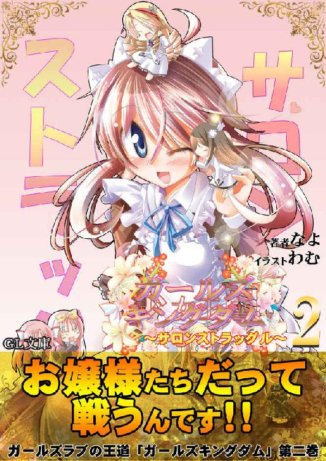
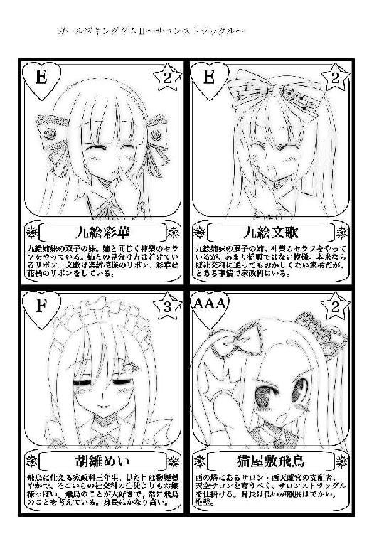

| ガールズキングダム2: サロンストラッグル (GL文庫) | |
| なよ | |
| GLnovels (2015) | |


「お願いします！ 私をセラフにして下さい！」
――それは、わたしたちが天使女学院に入学して、二週間ほど経ったあるお昼の出来事だった。
食堂では配膳のお手伝いをする家政科の生徒が慌ただしく動き回り、次々にやってくる社交科のお嬢様を席へ案内するさなかでそれは起きたのだ。
ここ天使女学院では、貴族階級とも呼べる社交科と、その社交科のお嬢様たちにお仕え出来るようなメイドを育成する家政科の二つの学科がある。
わたしたち家政科の生徒は、学院の中で社交科のお嬢様たちのお世話をしながら、メイドとしての知識と経験を学んでいかなければならない。
炊事や洗濯、掃除は当然のこと。社交科のお嬢様の身の回りのこと全てをこなせるように、様々なことを教え込まれるのだ。
そんな中で、ある特定のお嬢様に気に入られると、専属契約なるものを持ちかけられることがある。
金の契約や銀の契約と呼ばれ、その申し出を受け入れた生徒は、セラフやエクスシアと呼ばれて、契約したお嬢様のお世話を専門ですることになっていく。
それはわたしたち家政科の生徒にとって、とても特別な称号。
専属契約を交わした生徒は、その能力を認められたということになり、成績のアップはもちろんのこと、お給金も良くなるという特典付き。
さらには金の契約を交わしてセラフとなった生徒は将来を約束されたようなもので、ほとんどの生徒は卒業後に契約して頂いたお嬢様のご家庭で、そのまま働けるようになるのだ。
もちろん例外はあるだろうけど、セラフになるということは、この学院では特別な意味を持つことだった。
――そのセラフにして欲しいと、家政科の生徒の方から申し出たのだ。
申し出た生徒はある社交科のお嬢様の前で、頭が地面に擦りそうになるほど腰を折り曲げて懇願していた。
一瞬にして、その場が水を打ったようにシンと静まり返った。
慌ただしく食堂を行き来していた家政科の生徒は足を止め、食堂へ集まり始めていた社交科のお嬢様たちも、何事かと目を見開いてその光景を見つめていた。
空気が張り詰める――。
それを見ていたわたしのこめかみを、冷たい汗が流れた。
この学院に来て間もないわたしにも、その行為があきらかにマズイものであるということが理解できたのだ。
それは、わたしの友達のきららちゃんが、この学院のことを色々と教えてくれたからなのだけど――。
社交科のお嬢様たちは、学院に多額の寄付ができるような裕福なご家庭の子女ばかり。
漫画やドラマの中でしか見ることができないような社長令嬢や、有名な芸術家や大病院のご息女だったりお孫さんだったり、そんなお嬢様がごろごろと在籍しているのだ。
それに比べてわたしたち家政科の生徒は、ごくごく一般的な家庭の子が多い。将来、社交科のお嬢様たちの様なご家庭で、メイドとして働くことを目標にしている生徒ばかり。
お嬢様とメイド、使役する者とされる者、それがわたし達の関係だ。
さらに、家政科の生徒たちの授業料や生活費は、すべて社交科のお嬢様たちのご家庭から出されている寄付金で賄われているので、私たちは社交科のお嬢様たちに頭が上がらない。
だから、これから楽しいお昼の時間という時に、それを邪魔する行為は当然許されることではなく――。
ましてや自分から「セラフにして欲しい」、などとお願いすることは絶対にやってはいけないこと、そうきららちゃんに聞いていた。
わたしたちがお嬢様を選ぶのではなく、お嬢様に選んで頂く。それが当たり前のこと。
こちらから逆指名のようなことをするなど、とんだ礼儀知らず、恥知らず、と罵られても仕方無い行為なのだ。
それらのことを、口を酸っぱくして教えてくれたのがきららちゃんなのに――。
きららちゃんだというのに――。
そのきららちゃんが目の前で頭を下げているのだ。
わたしは軽く目まいがするのをこらえながら、きららちゃんが頭を下げている相手を見つめた。
その人は御影神楽様。
この学院において、社交科の生徒たちの中でも最高位に位置するお嬢様だ。
神楽様のお家から学院に寄付している額は飛びぬけて高く、ゆうに数億とも言われている。その証拠に、学院で最も人気のある天空サロンを所有し、天上人と呼ばれて同じ社交科のお嬢様たちからも一目を置かれているのだ。
その神楽様のセラフになるということは、そこらの上場企業に就職するよりもよっぽど安定した将来を約束されるということになる。
誰しもが憧れるお嬢様ではあるけれど、すでに神楽様には二人のセラフがいる。
九絵文歌さんと、九絵彩華さん。
同じ読みを持つ双子の姉妹が常に神楽様の傍にいるのだ。
この双子の姉妹はちょっと普通の家政科の生徒とは違うのだけど、それは今は置いておいて――。
すでに二人もセラフがいる以上、神楽様が新しくセラフを求める可能性は低い。
もちろんセラフは何人と契約してもいいし、神楽様くらいのご家庭なら十人、二十人と雇うことだって可能だろう。
だけど、神楽様が双子の姉妹以外にセラフが欲しいと言っているのを聞いたことはない。
わたしがどうしてそんなことを知っているかって？
それはわたしが運命の悪戯に翻弄されて、何の因果か天空サロンの住人である天使姫子さんのセラフになったからだ。
姫子さんは、その珍しい天使の性からもわかる通り、この学院を創設した天使家のお嬢様で、これまた他のお嬢様たちとは一線を画する存在だった。
そんな姫子さんのセラフになったわたしは、日常的に天空サロンへ出入りすることになっていた。そこで姫子さんはもとより他の天上人のお世話をしていれば、必然的に色々と情報が入ってくる。
その中で、神楽様が新しいセラフを欲しがっている様子がないことを、見てとれていたのだ。
でも、可能性がないわけじゃない......気がする。
神楽様は天空サロンの主らしく、女王のような風格を持っている。
まだ神楽様のことをすべてわかっているとは言えないけれど、真剣にお願いをしている相手を冷たく突き放す人ではないと思う。
きっときららちゃんの話を聞いて、その上で返事をしてくれるはずだ。
もしかしたらきららちゃんの真剣さに心を動かされて、セラフにしてくれるかもしれない。
「お願いします！」
再びきららちゃんが頭を下げた。
食堂へ集まる生徒の数は次第に増え、皆がこの成り行きを見守っていた。
一体、神楽様はどうするおつもりなのかと――。
しかし、神楽様が何か反応する前に動いたのは、神楽様の両脇に立っていた九絵姉妹だった。
神楽様の前に一歩踏み出すと、二人で門兵のように腕を交差させて、きららちゃんとの間を塞ぐようにしたのだ。
「下がりなさい、無礼者」
「自らセラフになることを望むなど、身の程をわきまえなさい」
当然と言えば当然だけど、九絵姉妹の口調は厳しい。
神楽様のセラフとして、そして上級生としてきららちゃんのことを叱咤しなければ規律の乱れにも繋がってしまう。
このような暴挙を許してはいけない。
それはわたしもわかっている。きららちゃんだってわかっているはずだ。
だけど、それを知っていてなお、きららちゃんは行動に出たのだ。
きららちゃんがセラフになることに情熱を燃やしていることは、散々本人から聞かされている。
一流のメイドになる為に、人一倍努力をしているのも知っている。
もしここで神楽様が九絵姉妹同様に、きららちゃんを厳しく非難しようものなら、これまでの努力が全て無駄になってしまう。
神楽様に非常識な生徒であると烙印を押されたら、もう誰もきららちゃんをセラフにしようとは思わないだろう。
きららちゃんはこの学院に来て最初に出来た友達だ。
できることならわたしも力になってあげたい。
神楽様と面識のあるわたしが一緒にお願いすれば、少なくとも最悪の事態は回避できるかもしれない。
でも、そんなことをしてもいいものだろうか。
きっときららちゃんは、わたしが手助けすることを望んでいない。
わたしの力を貸して欲しかったら、一人でこんなことをしていないはずだ。
自分の力を認めて欲しいから一人で行動したに決まっている。
だけど、きららちゃんのことも、神楽様のことも知っているわたしとしては、非常に居た堪れないものがある。
どうしようか迷っていると、ふいにわたしの肩に誰かが触れた。
「どうしたの？ みさき」
耳元で聞こえた声はよく知ったものだった。
「姫子さん」
それはわたしの主であるところの、天使姫子さんだった。
ほんの少し紫がかった美しい黒髪が背中まで伸び、左耳の上あたりには羽のアクセサリー。お人形さんのように整った顔立ち、高貴な立ち振る舞い、溢れ出るオーラ。それらを併せ持つ姫子さんを、わたしと同じ少女という言葉でひとくくりにするにはあまりにも次元が違い、美少女というカテゴリーに分けなければ各方面から苦情がきてしまうだろう。吸い込まれるような深い青色の瞳が、わたしの事を優しく見つめていた。
思わず見とれてしまいそうになるけど、今はそれどころではない。
姫子さんならこの場を穏便に済ませることができるかもしれない。
一縷の望みを込めて、わたしは姫子さんに助けを求めた。
「姫子さんっ、助けてください。きららちゃんがセラフになりたいってお願いして、あやかさんたちに阻まれて、神楽様が何も言ってくれないんです」
「......うーん、みさき、少し落ち着きなさい。何を言いたいのかよくわからないわ」
姫子さんはわたしの両肩に手を置くと、優しく揉んで肩の力を抜いてくれた。
冷静さを取り戻したわたしは、今度はちゃんと伝わるように言葉を選んで姫子さんに今の状況を説明する。
「......そう、あそこで頭を下げている一年生の子はみさきのお友達なのね」
「はい。星野きららちゃんっていいます」
きららちゃんは九絵姉妹に叱咤されても引き下がる様子を見せずに、その場に留まって神楽様に訴え続けている。
その行為が長引けば長引くほど、きららちゃんの立場は悪くなってしまう。
「神楽さんのセラフになりたいが為にこんな無茶をしてしまっているのね。勇気のある行為だけれど、さすがに無謀というしかないわね」
姫子さんはわたしの耳元で小さくため息をついた。
「きららちゃんもそれはわかっているはずです。だって、この学院のことをわたしに色々と教えてくれたのはきららちゃんなんですから」
「そう......」
姫子さんは神楽様ときららちゃんの方へ視線を向けていたけど、少ししてわたしの肩から手を離した。
「これは私が口を出す問題ではなさそうね。神楽さんにお任せしましょう」
「ええっ、助けてくれないんですか？」
「勘違いしないで欲しいのだけど、冷たく突き放しているというわけではないのよ。特に助けが必要な場面だと思わないから放っておくだけよ」
「そんな」
どこをどう見たら助けが必要ないと判断できるのだろう。
見るからにきららちゃんの大ピンチではないか。
わたしが頬を膨らませていると、姫子さんはクスリと笑いながらきららちゃんたちの方を指差した。
「ほら、御覧なさい。神楽さんがあやかさんたちを抑えるみたいよ」
言われてそちらを見ると、ようやくといった感じで神楽様が片手をあげて九絵姉妹を止めていた。
「あやか、食事の準備を続けなさい。皆さんも気になさらずお昼休みの続きをなさってください」
後半は周りに聞こえるように、少し大きな声で言っていたのだけど、一度もきららちゃんの方を見ていなかった。
『わかりましたわ』
九絵姉妹は声をハモらせて、その場を離れて自分たちの仕事へと戻っていく。
その間もきららちゃんは頭を下げたままで、神楽様もきららちゃんに何か言葉をかけるということはなかった。
社交科の生徒たちは何事もなかったかのように動き始め、家政科の生徒は恐る恐るといった感じで持ち場へと戻っていく。
「これで解決したってことですか？」
「この場はそうね」
そうねって......全然解決しているようには見えないんですけど。
「きららちゃんはどうなるんですか？」
「どうもならないわ。神楽さんが何もしないと判断したのだから、これでお終いよ」
「ええっ？」
意味がわからない。結局どういうこと？
「ほら、みさきも私を席に案内して、食事の準備をしてちょうだい。もちろんみさきの分もね」
「そ、それはいいんですけど......」
再びこめかみを冷たい汗が流れた。
食事を取る席は基本的に自由だ。誰がどこに座ってもいいことになっている。
しかし、暗黙の了解的な物はいくつもあり、神楽様や姫子さんのように、特定のサロンに所属している人は概ね特定の席に固まって座ることが多い。
姫子さんのセラフであるわたしも天空サロンに所属している扱いになり、姫子さんのお世話をしなければならないので、自然と同じ席で食事をすることになっている。
クラスメイトと一緒に食事をしたいという気持ちはあるけど、こればかりはどうにもならない。優先されるべきは姫子さんのお世話なのだ。
そんなわけで姫子さんを席に案内するということは、神楽様の席の傍になるわけで、そこには今も頭を下げ続けているきららちゃんがいる。
ひっじょーに気まずい。
なんて声をかけたらいいのだろう。そもそも声をかけてもいいのだろうか。
「さあ、行きましょう」
なかなか動かないわたしの手を取って、姫子さんが引っ張っていく。
「ひ、姫子さんっ、きららちゃんはどうするんですか」
「どうもしないと言ったでしょう。当事者である神楽さんが構わないと決めたのだから、部外者の私たちもその子に構う必要はないわ」
「それって、放置しておけってことですか？」
「そうなるわね」
姫子さんはとうとう神楽様の隣まで行くと、「ごきげんよう」と言って神楽様の正面の席へと座った。そこが姫子さんのいつもの席だ。
「さあみさき、私の食事を持ってきて貰えるかしら」
「わ、わかりました」
本当にきららちゃんをこのままにしておいていいのかな。
いくらなんでも冷たくない？
ちらちらときららちゃんの方を見るけど、きららちゃんはわたしの方を見ることはなく、ずっと同じ姿勢のままだ。
お昼休みの間中そうしているつもりなのだろうか。
声をかけたい。かけたいけど、姫子さんがああ言った以上わたしも主である姫子さんの意向に逆らうことはできない。
せめてもの救いは、きららちゃんが頭を下げたままで、視線が合うことがないということだ。顔を見たら絶対に何かを言ってしまうだろう。
その日の昼食は、食べた物も味もまったく記憶に残らなかった。
＊＊＊
「あの、きららちゃん」
「何かしら」
お昼休みが終わって教室へと戻ったわたしは、思い切ってきららちゃんに話しかけた。
教室内は当然のようにざわつき、きららちゃんがした行為の是非を友人たちと話したいけど話せない。きららちゃんに対してどう接していいのかわからない。そんな異様な雰囲気になっていた。
そんな中、話を聞けるとしたらきっとわたししかいないだろう。
周りのクラスメイトが、耳だけこちらに集中してくるのがありありとわかる。
結局、きららちゃんは自分のお昼ご飯を食べることもなく、神楽様が食堂を出るまでずっと頭を下げ続けていた。
凄い度胸と根性だと思うけど、効果はあまりなかったと思う。
神楽様は一度もきららちゃんを相手にすることはなかった。同じテーブルについていた他の天空サロンのメンバーも同じで、神楽様の意向を汲んでか粛々と昼食を取るばかり。
その中にあって唯一の一年生で、きららちゃんの友達であるわたしだけがオロオロとする有り様だった。
今になってやっぱり姫子さんに強くお願いしてなんとかしてもらえばよかったと、後悔し始めていたのだ。
「あの、ごめんね」
「あなたに謝ってもらう理由が思い浮かばないわ」
きららちゃんはそっけなく返してきた。
「う、うん。多分きららちゃんはわたしのことなんて頼りにしていないとわかっているけど、怒られてもいいから神楽様にお話だけでも聞いてくれるようにお願いすればよかったって思って」
「余計なことはしなくていいわ。これは私が自分で決めたことなの。神楽様のセラフになりたいって思ったから無茶を承知で行動したの。私自身を見てもらうためにはああするしかなかったのよ」
きららちゃんは真っ直ぐに前だけを見つめていた。
その瞳には後悔も迷いもなかった。
「あの、もしよかったら神楽様にきららちゃんのことを話してみるけど......」
「余計なことはしなくていいと言ったでしょ。みさきは普段通りにしていればいいの。明日も今日と同じようにしていてくれればいいわ。これは私の戦いなのよ」
明日もって......。
「もしかして、明日も同じように？」
「そうよ、神楽様から直接下がりなさいと言われるまで、私は諦めないわ」
「うう......」
あれだけ相手にされなくてもめげないのは凄いけど、あの張り詰めた空気に当てられるとわたしのほうが参ってしまいそうなんだけど......。
「どうしてそんな無茶をするの？」
「どうして？」
きららちゃんが片方の眉を吊り上げながら、憎々しげな表情でわたしを睨んできた。
「あなたがそれを言うのっ？」
きららちゃんは、びしっと人差し指をわたしに突き立てる。
「わ、わたしが何かしたっけ？」
「ええ、ええ、みさきは自分の罪深さに気が付いていないと思っていたわよ」
「つ、罪深さ？ 思い当たる節が......」
「ないとは言わせないわよ。みさきが姫子様のセラフになってからのことを思い返してみなさい。そしてそれを私になんて言っていたかしら？」
姫子さんのセラフになってからのこと？
「ええと」
わたしは必死にきららちゃんに話したことを思い出していた。
――そう、たとえばこんなことがあった。
＊＊＊
「みさき、今日は泊まっていったらどうかしら」
「はい？」
姫子さんのセラフになって初めての週末――。
天空サロンでお茶をした後、わたしはいつものように姫子さんのお部屋まで付き添っていった。
姫子さんのセラフになってからというもの、ほぼ毎日のように姫子さんの部屋へと足を運んでいる。
というのも、姫子さんが部屋の掃除や着替えの手伝いをして欲しいと我儘を言うからだ。
姫子さんは随分とセラフがいる生活に思いを馳せていたらしく、あれやらこれやらと仕事を言いつけられる。
そんなにもセラフが欲しかったのなら、「誰か適当な人を選んであげればよかったのに」なんて言うと、決まって「色々と事情があるのよ」とはぐらかされてしまう。あまり言いたくないようなことみたいだし、無理に聞こうとはしないけど、少し気になってしまう。
でも、わたしも一年間という約束でセラフになることを承諾した、いわば契約社員的なものなので話してくれないのも仕方ないのかもしれない。
持ちつ持たれつ、程よい共生関係がわたしたちの在り方だった。
それはともかく――。
部屋着への着替えを手伝うために姫子さんの制服を脱がしていると、先ほどの様なことを言ってきたのだ。
「泊まりって、姫子さんの部屋にですか？」
「もちろんそうよ」
わたしの用意したフリル付きのブラウスに袖を通しながら、姫子さんはにっこりと微笑んだ。
「わたしは構いませんけど、泊まったりしてもいいものなんですか？」
春先でまだ少し肌寒いので、裾がレース模様になっている紫のポンチョをブラウスの上から着てもらう。
スカートは落ち着いた感じの、灰色のフレアスカート。
これらは全部、例のご両親からのプレゼントだ。一見どこにでも売っていそうなものに見えて、手触りが段違いに良かったりするから、かなりいいものなのだろう。
これを放りっぱなしだったなんて勿体ない。
「もちろん一般の生徒はダメよ。お泊りが許されるのはセラフだけ。エクスシアでもダメね」
お泊りねぇ......。
それはつまり、就寝時間まで一緒にいなければいけないということで、お世話をする時間が増えるということか。
そんなわたしの考えを見抜いて姫子さんは続ける。
「勉強する時間がなくなるとか思っている？」
「少し......」
わたしはこの学院に、授業料や生活費がタダっていうだけで来てしまった。
それがまさかメイドになるための勉強をやらされるなんて......。
普通の授業なんてあまりないし、一般教科を普通の高校生並みにやろうと思ったら、自力でなんとかするしかないのだ。
だから、暇な時間は勉強に費やしたいところなんだけど――。
「でも、お泊りするのは別に構いませんよ」
「本当？」
姫子さんが嬉しそうな声をあげる。
ここの生活に慣れてきたせいもあるだろうけど、最近は少し考え方が変わって来ていた。
メイドの仕事もちょっと楽しいかな、と思わないでもないのだ。
もともと家事全般は自分でやっていたので嫌いなことではない。何より姫子さんのセラフでいるとお給金の面でも優遇されるらしいし、姫子さんに勉強を教えてもらうこともできる。
本格的にやるのは二年生になってからでもなんとかなると思うし、一年生の間はこの特殊な環境を楽しむのもありかな、と思うようになっていた。
「お泊りするのはいいんですけど、姫子さんにどんな無茶なことを言いつけられるのかが心配で――」
ふうっと、わざとらしくため息を吐く。
何しろ姫子さんはセラフとの生活に夢を見ていたのだ。
となれば、このお泊りもその一つに決まっている。
「失礼ね。無茶なことなんて一度も言っていないでしょう。普通にメイドとしての働きの範囲内です。それに、お泊りだと時間外手当が多くつくはずだから、みさきの為でもあるのよ」
姫子さんは、ぷくーっと頬を膨らませた。
「冗談ですよ」
わたしが姫子さんの要望を聞くのと同じで、姫子さんもわたしのことを色々と考えてくれている。
わたしにとって姫子さんは最良の主人――お嬢様だと思う。
「でも、お泊りするとなると、着替えとか取ってこないといけませんね。とりあえずは下着とパジャマくらいあれば大丈夫......かな」
お風呂は姫子さんのお部屋のをまた借してもらえばいいし。ささっと一度自分の部屋に戻ってきたほうがよさそうだ。
「その必要はないわ。買い揃えればいいのよ」
姫子さんはちょっと得意げな笑みを浮かべていた。
「買い揃えればって......」
「寮の一階にお店がいくつかあるのは知っているでしょう？ そこに行けばお菓子とか日用品とか、服も下着も大抵のものは買うことができるわ」
確かに姫子さんの言う通り、社交科の生徒たちの寮であるフランソワ館の一階には、ホテルショップの様な洒落たお店が数店舗入っていた。外から少しだけ覗いたことがあったけど、綺麗に陳列された商品はどれも高そうで、わたしには縁がなさそうなものばかり。
ギフトショップなんかもあり、そんなもの生徒が利用するの？ と突っ込みたくなってしまう。
いや、社交科のお嬢様たちが利用するお店なのだから、わたしのような一般庶民では想像できない場面で利用したりするのだろう。
そんな高級店が並ぶ中で、唯一わたしでも利用できそうなところといえば、コンビニを豪華にしたようなお店くらいだ。そこは姫子さんの言っていた様な、お菓子や日用品が売っていた。
しかし――。
「わたし、一文無しなんですけど」
悲しいけど、これ現実なのよね。
厳密には少しくらいのお金は持っているけど、無駄遣いが出来るはずもない。
お給金とやらが入ってくるのは早くても五月の終わりらしいので、それまではひたすら我慢の生活だ。
「そんなことわかっているわよ」
わたしが悲しい現実を告げると、姫子さんはあきれたように言った。
「誰もあなたに支払わせるなんて言っていないでしょう？ 私がお願いして提案したことなのだから、私が面倒を見てあげるに決まっているわよ」
「はあ」
「はあ、じゃないわよ。さあ行きましょう」
呆けているわたしの手を握って、姫子さんは玄関の方へと歩いていく。
「それはつまり？」
「私が支払うと言っているのよ」
「そんな、悪いです」
いくら姫子さんが社交科のお嬢様で理事長代理なんてものもやっていて、お金に余裕があったとしても、そこまで甘えるわけにはいかない。
「悪くないわよ。私が唐突に泊まっていけなんて言ったのだから、それくらいのことはして当然だわ」
「いえ、そこまでして頂かなくても、自分の部屋に行けば事足りることなんですけど......」
わたしが食い下がっていると、姫子さんは「ああ、もうっ」と不機嫌そうに振り向いた。
「少しは私の気持ちを読み取りなさい。一緒に買い物に行って、お泊りの用意をしたいと言っているのよっ」
「............」
ようするに、姫子さんがやりたいことだから、それに付き合えということか。
わ、分かり辛いなあ......。
「姫子さんの言いたいことは理解しました。でも、自分で使うものですから自分で買いますよ」
「お金がないのに？」
「ツ、ツケで？」
「そんなものはききません」
姫子さんは、フフンと鼻を鳴らした。参ったかしら、と言っているようだった。
「みさきは変なところが頑固でダメね。こういうときは素直に甘えていればいいのよ。だいたい、セラフにお金を出させたりなんかしてみなさい。私がセラフ一人の面倒も見られない甲斐性無しだとすぐに噂が広まってしまうわ」
「そんな」
「そんなことがあるのよ。大体、お金を持っていたって、あそこのお店では使えないわよ。専用のカードがないとね」
そう言って、姫子さんはお財布の中から一枚のカードを取りだした。
クレジットカードというわけではなさそうだけど、黒色のセレブチックなカードだ。
「みさきたちの寮にあるお店なら現金が使えるみたいだけど、私たちの方では全部これで支払うのよ」
「へえ......」
なんでも毎月決められたポイントが付与されて、その範囲内で買い物ができるようになっているらしい。
言ってみれば、お小遣い的なものだろうか。
多額の現金を持たせないようにとか、際限なくお金を使ってしまうのを防ぐためとか色々あるのだろう。
「どれくらいの買い物ができるんですか？」と聞くと「さあ？」と興味なさげな返事が返ってきた。
「だって一度も使いきったことがないんですもの。幾ら使えるかなんてわからないわ。それに全部ポイント表示なんですもの、実際のお値段なんて知らないわ」
「そうですか......」
それは姫子さんがあまりお買い物をしないのか、それとも使いきれないだけのポイントが与えられるのか――。
「わかったのなら行きましょう。もし施しを受けるのが嫌というのなら、働きで返してちょうだい」
その一言で、わたしは素直に姫子さんの行為を受け入れることにした。
「わかりました」
そして、ようやくわたしたちはお店へ向かったのだった。
＊＊＊
「まずは下着からかしらね」
初めに姫子さんに連れられて入ったお店は、生活雑貨などが売っているお店だった。
ショーウィンドウにはデザインの凝ったアロマポッドや、ティーセットが並び、明らかに高そうなそれらの品々は見ているだけでため息が出てきてしまう。
思わず値札を探すと、うっかりすると見逃しそうなほど小さなひも付きの下げ札が取り付けられていた。
「アロマポッド１２００Ｐ......、ティーセット４０００Ｐ......」
なるほど、ポイント表示だ。
......これは１ポイント一円なのかな。多分こういう校内に入っているお店は市販の価格よりも安くなっていることが普通だと思う。学食や社員食堂も普通のお店の半額以下とか普通だし......。
だとすると、お嬢様たちが利用するにしては意外とお値打ち価格だ。
庶民感覚を養う勉強とかだったりするのかも。
「みさき、何をしているの？」
「あ、はーい、今行きます」
あまり高そうなお店じゃなくてよかったと、胸を撫で下ろしながら姫子さんの後に付いていく。
そのお店の中は、入ってすぐのところにショーウィンドウに飾ってあったティーセットなどの食器類や調度品、文房具にインテリア雑貨が並べられていた。
そして、その奥――お店のロゴの様なものが入ったパーテーションで区切られた先が、ブティックの様になっていた。
その一角へ足を踏み入れると、場の雰囲気が一気に華やかになる。
お店の中央に色とりどりのドレスが――そう普通の服ではなくてドレスが飾ってあるのだ。
こんなの買う人がいるの？ と思うけど、こうして場を占拠しているのだから需要があるのだろう。
これは、家政科の寮にあるお店では絶対に売っていないものだ。
わたしが見惚れていると、
「ドレスも欲しいの？」
と姫子さんがなぜか嬉しそうに聞いてきた。
「いえいえ、こんなの着る機会ありませんからいらないですよ」
「そう？ 舞踏会に出る時には必要だと思うけど」
「そんなもの出る予定ありませんから」
姫子さんが真顔で言うあたり、本当に舞踏会をやったりすることがあるのだろう。
「みさきが行きたいというのなら、いくらでも連れて行ってあげるのに」
「謹んで辞退させていただきます」
そんなところへ行ったって恥をかくのは目に見えている。
「それは残念ね。みさきが一緒なら行ってみるのも楽しいかもしれないと思ったのに」
つくづく社交科の生徒は別次元の存在だと思い知らされる。
「それよりも下着を買いましょう」
「仕方ないわね。ドレスは次の機会にしましょう」
そんな機会は一生来ないと思う。
姫子さんを促すと、渋々ながら下着類の置いてあるブースへ移動してくれた。
そこも先ほどのドレスが飾られていた場所に負けないくらい華やかに輝きを放っていた。
もともとランジェリーショップはお花畑の様なものだけど、ここはさらに上を行っている。
可愛らしいデザインのものから、セクシーなものまで、全てガラスケースの中に納められているのだ。
まるで宝石類の様な扱いだ。
「いらっしゃいませ......まあ姫子様ではありませんか」
わたしたちがガラスケースの中を覗いていると、店員さん？ が慌てた様子で走り寄ってきた。
店員さんであれば普段から社交科の生徒には接しなれているはずなのに、やはり姫子さんは別格らしい。
さらさらのロングヘアーに天使の羽のような髪飾りをつけ、日本人離れした美しさを持つ姫子さんは、いやが上にも人目を惹きつける。
さらには理事長代理という肩書きまで持っていれば、他のお嬢様たちと同じ扱いというわけにはいかないのだろう。
「本日は何をお求めでしょうか」
わたしとそれほど年が変わらないように見える若い店員さんは、両手をもみもみさせながら深々と頭を下げた。
一瞬わたしに値踏みするような視線を向けたのは気のせいだろうか。
「この子に下着を何着か見繕って欲しいのだけど。上下セットでお願いね」
姫子さんがわたしの肩を抱いて、少し前に押し出した。
「かしこまりました。それではサイズをお測りしましょうか」
「えっ、いや、いいですそんな」
わたしは慌てて首を横に振る。さすがに自分のサイズくらい把握している。
「ろ、６５のＢですから」
あまり大きいとは言えないから口に出すのが恥ずかしい。姫子さんがいるからなおさらだ。
「あら、意外と小さいのね」
「ひあっ。何するんですか」
突然胸を揉まれて、わたしは素っ頓狂な声をあげてしまった。
そんなことをするのは当然のごとく姫子さんだ。
「もう少しあると思ったのだけど、......でも形はいいのよね」
果物の熟れ具合でも確かめるような口調で、遠慮なく触ってくる。
「寄せて上げる努力をしているんです」
落ち着きを取り戻して、わたしは憮然として言った。
もう最近はこの手の事には慣れてきたので、それほど慌てることもない。九絵姉妹はもっと無遠慮に触ってくるのだ。
「姫子さんはそんなことをする必要もなさそうですけどね」
背中に感じる姫子さんの膨らみは、明らかにわたしとはボリュームが違った。
「そうねぇ、あまり気にしたことはなかったわね」
胸から手を離して姫子さんは真剣に思案していた。
「でも、今度からはみさきの真似をしてみようかしら」
「そんなことしなくていいですよ」
それ以上大きくしてどうしようというのか。
「もし、バストを大きく見せたいとお思いでしたら、こちらなどいかがでしょうか」
わたしたちの会話の隙を見て、すかさず店員さんがセールストークを挟んでくる。
ガラスケースに並べられたブラを指しながら、どちらかといえば姫子さんに説明し始めていた。
「なかなか悪くないけれど、みさきは気に入るかしら」
店員さんがお勧めするものは、どれも大輪の薔薇などの刺繍をあしらった、エレガント＆ゴージャスなものばかり。
見るからに高そうだ。そしてどう考えてもわたしには似合いそうもない。
姫子さんが着ければどんな派手な下着も見事に着こなしてみせるのだろうけど、わたしではその派手さに負けてしまうこと請け合いだ。
わたしみたいな庶民には、白い無地の物や、せいぜいチェック柄のおとなし目のものが分相応だろう。
しかし、そういうおとなし目の物があまり、というかほとんどない。
そりゃ社交科のお嬢様たちが利用するお店なのだから、自然とそれ相応の品揃えになるに決まっている。
「もっと地味ぃ～なやつでいいんですけど」
地味の部分をことさら強調しておく。
「あら、遠慮する必要はないのよ？」
「遠慮というか、こういう派手な物は身につけたことがないもので」
サイズさえ合っていればいい性分なので、千円、二千円とかそこらのしか買ったことがない。そもそも下着にお金をかける余裕なんてものもなかったし。百円ショップで売っているのだって文句を言うつもりはない。
「仕方ないわね、私が選んであげるわ」
姫子さんはそう言うと、ガラスケースを覗きこんで三種類ほど選ぶと、店員さんに「これを頂くわ。同柄のショーツも一緒にね」と告げていた。
どんな物を選んだのか見てみれば、一つはわたしの意見を尊重してくれたのか、比較的シンプルな奴で、白地にピンクの花柄をあしらった可愛らしいものだった。
他の二つは、これでもかというくらいに凝った刺繍がちりばめられた派手目なものだった。薄いブルーとグレーの生地に、薔薇やリボンの刺繍を施し、カップ下やストラップにもフリルをあしらっている。
そこはかとなくアダルトな雰囲気を醸し出すそれらのブラは、姫子さんが身に着ければさぞかし似合うことだろう。しかし、ブラだけならまだしも、同柄のショーツを一緒につければ、わたしでは名前負けならぬ、下着負けになってしまうのは確実だ。
間違っても、馬子にも衣装となることはない。
「他にも欲しい物はあるかしら」
「いえいえ、三種類もあればじゅうぶんですよ。一日泊まるだけなら一種類でいいくらいですし」
「あら、これからも時々泊まりに来てもらうつもりなのだから、替えの下着は置いておいた方がいいでしょう？」
「ああ、そういうことですか」
「他にも歯ブラシとか、お箸とか買っておいたほうがいいかしらね。グラスもお揃いの物を新しく買いましょうか」
同棲ですかっ。と声には出さずに突っ込んでおく。
「事前に行ってもらえれば、準備して行きますから大丈夫ですよ」
「あらそう？ それでは週末には常にお泊りできるように準備をしておいてね」
「毎週っ？」
「嫌かしら」
姫子さんは上目づかいで悪戯っぽく笑みを浮かべた。
「嫌じゃないですけど、お泊りしてまで何をさせるつもりなんですか？」
「そうね......」
姫子さんは顎に人差し指を当て、考えるような仕草をした。
「たとえば一緒に夕食を食べたり、夜更かしをしてお喋りに華を咲かせたり――」
「それってセラフの仕事なんですか？」
「もちろんよ。身の回りの世話ももちろんだけど、主人の余暇を一緒に楽しむことだって重要な仕事だわ。何をするにも主人と一緒なのがセラフなのだから」
それはもはやメイドというよりは、友達......いや、妹みたいな気がするけど姫子さんがそうというならそれが仕事になるのだろう。
「そして朝には熱い紅茶を淹れたみさきが、私を優しく起こしてくれるの。とても素敵な朝の始まりだと思わない？」
「はあ」
まあ、されるほうは素敵な気分になれるだろう。
「ご期待に添えるように頑張ってみますけど、あまり過度の期待はしないでくださいよ」
残念ながらまだまだ駆け出しメイドなので、姫子さんの望む通りにできるかちょっと不安だ。
「いいのよ、初めから完璧になんてできるはずないもの。成長する過程を見るのも主人の楽しみの一つよね」
姫子さんは楽しそうに目を細めて微笑んだ。
「さあ、下着を買ったら。次はパジャマね。その後でおやつでも買いましょうか」
「はいはい、もう全て姫子さんにお任せ致します」
「よろしい。それではお会計をして――の前に」
姫子さんは、ガラスケースの中から先ほど選んだ下着を取り出している店員さんに向かって、
「私にも同じものを頂けるかしら。サイズは７０のＤで」
と言ったのだった。
Ｄカップ......、やっぱりそれくらいあるんだ。わかっていたけど、スタイルいいなぁ。
思わず自分の胸に手を当てて大きさを確認してしまう。
わたしももう少し大きくなれば、派手な下着を着けても似合うようになるのだろうか。
「自分の胸を揉んで何をやっているの？」
いつの間にか会計を済ませた姫子さんが、怪訝な表情で首をかしげていた。
「な、なんでもないです」
慌てて胸から手を離さす。
「あ、荷物はわたしが持ちますよ」
「そう？ それではお願いしようかしら」
「はい」
姫子さんから二人分の下着が入った紙袋を受け取る。その時にレシートも貰ったので、ちょっと確認してみたのだけど、そこには合計で１３０００Ｐと明記されていた。
概ね上下ひと揃いで２０００Ｐくらいだ。
あれ？ 結構安い？ なんてその時は全然気にしていなかった。
いくらお嬢様たちが利用するお店だからって、さすがに学生からは高いお金を頂くわけにはいかないのか、それとも下着メーカーの社長令嬢なんかが居て、そのツテで安く仕入れが出来ているのか――。
とにかく、これだけいい物がこのお値段で買えるのは魅力的だ。
これなら姫子さんにお願いして、お給金が入ったらまた連れてきてもらいたいな、なんて打算的なことを考えていた。
その後はパジャマもお揃いのを買って――姫子さんはいつもはネグリジェなので初めて買ったらしい――その時も一着１０００Ｐ程度だったので「良心的な価格だー」と喜んでいたのだけど――。
「あれ？」
ちょっとおかしいなと感じ始めたのは、「お菓子も買っていきましょう」と姫子さんの言うままに、フードコーナーへ寄り道をした時だった。
和菓子・洋菓子から、コンビニに売っているようなスナック菓子まで各種取り揃えられているお店は人気があるらしく、真剣な表情で商品を吟味している社交科のお嬢様たちの姿がそこかしこに見受けられていた。
そこら辺はやはり年頃の女の子らしく、わたしたち家政科の生徒とあまり大差がないようだ。
一人で来ている人もいれば、わたしと同じメイド姿の生徒と一緒にいる人もいる。ここにいるということは、あの人たちもセラフなのだろう。
先ほど姫子さんが言っていた「何をするにも主人と一緒なのがセラフなのだから」というのは本当の様だ。
この時間まで一緒にいるということは、あの人たちもお泊りする予定なのかな。
それはともかく――。
わたしも年頃の乙女なので、甘いものには目がない。特にドーナツにはかなりこだわりがある。
ありがたいことに、ここには手作りドーナツのお店があるようなので、わたしは姫子さんに絶対に買っていきましょうとおねだりすることにした。
「ええ、わかっているわ。そのつもりで来たのだし」
姫子さんは笑いながらショーケースの前まで案内してくれた。
そこでわたしは不思議な物を目にしたのだ。
ショーケースに並べらべられている各種ドーナツは、見ているだけで涎が出てきそうなほど美味しそう。きっとわたしが初めて天空サロンへ行ったときに用意してくれたドーナツは、ここで買ってきてくれたものなのだろう。
あれだけ美味しいものならば、値段もそれなりにするはずだ。
それなのに、表示されているポイントは１０Ｐから３０Ｐと異様に安かった。
おかしい。あの味なら一個数百円はするはずだ。１ポイントが一円なら最低でも１００Ｐはするはず。いくら企業努力で安く出来たとしても、この値段じゃ原価割れするに決まっている。
「姫子さんっ」
その安さに不安を覚えたわたしは、姫子さんに値段を確認しようとしたのだけど、姫子さんは複数の生徒に囲まれて、いつの間にか交友会のようなものが始まっていた。
姫子さんの姿を見つけては、入れ替わり立ち替わり社交科のお嬢様たちが挨拶に訪れているのだ。
姫子さんはその度に笑顔で対応していた。
これはしばらくかかりそう。
しかたなくわたしは自分で近くにあるお菓子を手にとって、値札をいくつか確認してみた。
するとどれもこれも１０Ｐや２０Ｐの低い表示の物ばかり。
先ほどの下着やティーセットならいざしらず、スナック菓子の値段くらい庶民のわたしにも正確にわかる。
ごくり、と喉が鳴った。
どうやらわたしは大きな勘違いをしていたようだ。
１ポイントが一円？ とんでもない。
このスナック菓子も、ドーナツも最低でも百円はするものばかり。
ということは......。
手にしいる下着の入った袋を見つめた。
１００円するお菓子が１０Ｐ......。
つまり、１ポイントが十円なわけで......。
先ほど買ってもらった下着は上下のセットが２０００Ｐくらいだった。
すなわちっ！ 二万円以上するということだ。三セットで六万円以上！
「ひえぇ......」
紙袋を持つ手が震えた。
普段身につけている物の十倍以上する下着を三セットも買ってもらっただなんて。
それだけあったら、ゆうに数カ月分の食費にできる自信がある。
「ひめっ、姫子さんっ」
わたしはふらふらと倒れこむようにして姫子さんに抱きついた。
お嬢様たちのお喋りを邪魔する無礼にも気が回らず、その時のわたしは涙目になっていたに違いない。
「ど、どうしたの？ みさき」
さすがに姫子さんもわたしの様子に驚いたのか、目を軽く見開いていた。
「これっ、これっ！」
わたしは震える手で手にした紙袋を掲げてみせた。
「それがどうかしたの？」
当然ながら、姫子さんは値段に驚いていることなんて知る由もない。
わたしが声も出せずに口をパクパクさせていると、
「ちょっと待っていなさい」
そう言ってわたしの頭を撫でて、いましがた談笑していたお嬢様たちに頭を下げた。
「皆さんごめんなさい、大切な用事を思い出しましたので、先にそちらを済ませてしまいますわ」
「まあ、それは呼び止めてしまって申し訳ありません」
「姫子様がこのような場所にいらっしゃるのが珍しくて、ついご都合も考えず失礼しました」
「いえ、お気になさらず。皆さまもどうかお買い物の続きを楽しんでらしてください」
優雅な退席の仕方に、わたしの気持ちは少しだけ落ち着きを取り戻す。
「みさき、こちらにいらっしゃい」
姫子さんが人目のつかない場所に連れて行ってくれたので、わたしは下着の入った袋を手に姫子さんに詰め寄った。
「これっ、凄く高いです」
「ええ？ 何を言っているの？」
姫子さんは顔にハテナマークを浮かび上がらせる。
「だから、先ほど買ってもらった下着ですけど、安いと思っていたら凄く高いものじゃないですか。そんなの頂くわけにはいきません」
「何を言っているのよ。別に驚くような値段ではないでしょう」
「驚くような値段ですよ。三種類でおそらく六万円以上するんですよ」
姫子さんはポイント表示に慣れ過ぎて、実際の金額がピンとこなくなっているに違いない。
そう思ったのだけど――。
「別にそれくらい普通でしょう？ 今日は置いてあるもので間に合わせたけど、本当はオーダーメイドで買うのが一番なのよね。そうなればその二、三倍くらいのお値段になるし、今日買ったのは安いくらいよ？」
「ど、どこがですかー」
つくづく住んでいる世界が違うことを思い知らされる。これが安いだなんてありえない。
「言っておくけど、返品は受け付けないわよ。それはみさきにプレゼントしたものなのだから、返されたりなんかしたら私の名前に傷がつくわ。天使姫子はセラフにプレゼントをつき返された可哀想な主人だって噂されてしまうわ」
「そんな......っていうか、その言い回しは卑怯ですよぉ。何も反論できなくなっちゃうじゃないですか」
「うふふっ」
姫子さんは小悪魔の様な笑みを浮かべた。こちらの反応を見て楽しんでいるようだ。
「いいじゃないのそれくらい。どのみち現金で支払っているわけでもないし、ポイントなんて使わなければただの数字でしかないわ。それに、みさきがちゃんとわたしのセラフとして勤めを果たしてくれているから、それのご褒美よ。気にせず受け取っておきなさい」
「うう......」
なんだかずるずると泥沼にハマっている気がする。
このままだとスケープゴートとしてのセラフから、本当のセラフにされてしまうのではないだろうか。
返すことのできないような借りは作らないようにというのが、信条なのに......。
「そんな下着の値段くらいでオロオロされても困るわねぇ。セラフというのは主人と同じ価値観でいてもらわないと。ちょっとくらい高価な物だからって、毎回騒がれたらまともに教育ができていないと思われてしまうわ」
「それは、そうかもしれませんけど」
「いいこと？ 今のみさきはレディースメイドと同じなのよ。レディースメイドは宝石の管理や、主人に付き添って夜会に出たり、こうして一緒に買いものに行ったりするものなの。みさきの価値観と違うものが沢山あるかもしれないけれど、いちいち驚かずにそれが当たり前の様な態度でいなさい。そうじゃなければ私が恥をかいてしまうのだから」
「わかり......ました」
この学院で姫子さんのセラフとして生活するからには、これはもう避けて通れない問題なのかもしれない。
「わかったのなら買い物の続きをしましょう。そして部屋へ戻ったら今の反省会よ。私のことをもう少し知ってもらう必要がありそうね」
「はーい」
「こういうことがあるのだから、やっぱりお泊りは必要よね」
姫子さんはなぜだかとても嬉しそうに微笑んだのだった。
＊＊＊
とまぁこういうことがあったりしたのだけど――。
「下着を買ってもらったのは嬉しいんだけど、姫子さんって意外と我儘なところがあるんだよね。それに金銭的感覚の違いにまだ慣れなくて......」
小さくため息をつくと、
「なんですってぇ」
きららちゃんが目を吊り上げて歯ぎしりをし始めた。
「そこまでして頂けるということは、それなりに信頼されているということでしょっ！ まだ二週間程度だというのにその親密っぷり。どれだけ気に入られているのよっ」
「いや、そこまで親密になっているとは思えないけど」
まだ姫子さんがセラフを作らなかった理由とか、聞かせてもらえていないし。
「はあ？ 何言っているのよ。誰がどう見たってあなたと姫子様は良い主従関係にあると思うわよ」
「そ、そうかな」
「そうよ。お泊りして世話をさせて頂けるなんて、いくらセラフだってすぐにはさせてもらえないことよ。あなたにはもうプライベートを見せてもいいと思われているってことでしょ？ お泊りした時のことだって、さんざん自慢していたじゃない」
「じ、自慢した覚えはないけど」
「はあ？ あれが自慢じゃなくてなんだというのよ」
ええと、わたし何を言っていたっけ。
お買い物をして、姫子さんの部屋に戻ってからのことを思い出す。
「ええと、お部屋に戻ってからお茶をして、一緒にお風呂に入って、その後で買った下着の試着会をして――、ああ、そういえばやっぱり派手なやつは似合わなかったんだよね。姫子さんも苦笑いしていたなぁ。だけど着け心地は凄くいいの。肌触りが今まで使っていたのと段違いで、やっぱり高いものは値段に見合った価値があるんだなぁって......はっ！」
突き刺さるような鋭い視線を感じで我に返った。
気がつけば、きららちゃんが今にも襲いかかってきそうなオーラを身にまとわせている。
「それのどこが自慢じゃないって!?」
「あはは、確かに自慢っぽかったかも」
「『ぽかった』じゃなくて、完全に自慢でしょ！」
「はい......。よくよく考えるとそうです」
わたしは心の中で、反省するために正座をしていた。
「ああっ羨ましい、羨ましい。それで他にも姫子様のセラフになってから何があったのかしら？」
「他っていうと......」
社交科の寮にお泊りできるのと、そこのお店が利用できること、天空サロンでのことは話したし、あとは――。
「勉強を見てもらったり、お下がりの洋服を貰ったり......ああ、そうそう。社交科の寮の裏手に広がる森の中にね、ひっそりとフランス料理店が建っているの。姫子さんお気に入りの秘密のお店らしくて、晩御飯はたまに連れて行ってくれるんだよね」
そのお店もやはり家政科の生徒が利用しようと思ったら、セラフとして自分のお嬢様に連れて行ってもらうしかない。
「まだ二週間くらいしか経ってないし、それくらいだよ。もう少し学院に慣れたら他のサロンに連れて行ってくれるとは言っていたかな。誰かを紹介してくれるとかなんとか......」
「ああっ、もうっ。どれだけ恵まれた生活をしているのよ！」
ついにきららちゃんは爆発してしまった。
「それだけの恩恵を享受していれば、セラフがどれだけ特別なものかわかったでしょう？
この学院に入る前はセラフのことを何も知らないとか言っておいて、実は一番にセラフになって、お嬢様との生活を満喫しているのだもの」
「そ、それは単に運が良かったというか、巡り合わせ的なものがあったというか......」
「そんな運だけでなれるほどセラフは甘くないわよ！ お嬢様に自分の力を認められて、メイドとして一流の才能を持つ者だけがセラフとして契約して頂けるの。それが、メイドの仕事も、セラフのことも知らないあなたがよりにもよって姫子様のような超一流のお嬢様のセラフになれるなんて間違っているわ」
「それはわたしじゃなくて、姫子様に言ってもらわないと......」
「シャラップ！ もう我慢できないのよ。私はずっとメイドになる為に勉強してきたのに、その為の技術も磨いてきたのに、どうして私はセラフになれないの!?」
「や、だってまだ二週間くらいしか経ってないんだよ？ きららちゃんにだってこれからいい出会いがあると思うけど......。それにほら、もう少ししたら、お世話係として社交科のお嬢様たちとの交流も始まるんだよね？」
「そんなの待ってられない。だから私は自分の道は自分で切り開くことにしたのよっ！ そして、蛍みさき！ あなたには絶対に負けないんだから！」
ビシッと人差し指を突き付けるきららちゃんの瞳は、爛々と燃えていた。
もう何を言っても聞く耳を持たないだろう。
わたしにできることは、きららちゃんが言うように、ただ見守るだけ......なのかな。
「お願いします、私をセラフにして下さい」
よく晴れた火曜日のランチタイム。
予告通り、きららちゃんはまたしても神楽様の前で頭を下げていた。
胃がきりきりと締め付けられる。
周りからの視線は全てきららちゃんに注がれ、わたしは無関係なはずなのに、気まずいことこの上ない。
きららちゃんは、わたしに普段通りにしていてくれればいいって言っていたけど――。
無理っ！
きららちゃんの方をまともに見ることができないし、変な汗は出てくるし、一刻も早くこの場から逃げ出したいのに姫子さんのセラフということで、この場に留まっていなければならない。
神楽様も天空サロンの面々も、他の社交科の生徒もまったくきららちゃんを相手にしないのがまた堪える。
それどころか、先生方まで何も言わないのだ。
家政科の生徒がこんなことをしているのは、大問題ではないのだろうか。
「みさき、今日の放課後はまた一緒にお買い物に行きましょうか」
姫子さんも、まるできららちゃんがそこにいないかのように、優雅に食事を取りながら午後の予定に思いを馳せていた。
そんな当てつけの様なことを言っちゃだめです！
わたしは心の中で「ひーっ」と悲鳴をあげた。
姫子さんは知らなくて当然なんだけど、仲の良い主従関係を見せつけたら、またきららちゃんの機嫌が悪くなってしまう。
しかし、姫子さんの誘いをむげに断ることもできない。
「そ、そ、そうですね」
冷や汗を流しながら、食事を喉に詰め込む。
うう、美味しいはずの昼食の味がまったくしない。
きっとこの場にいる生徒の中で、一番わたしが緊張しているに違いない。
はやく、なんとかならないものだろうか。
残念ながらわたしの願いは、次の日も、その次の日も叶うことはなかった。
＊＊＊
「お願いしますっ」
水曜日も、木曜日も、きららちゃんは同じように神楽様の前で頭を下げていた。
神楽様は相変わらずきららちゃんに声をかけることも、視線を向けることもない。
それでもきららちゃんはめげずに、ひたすらお願いし続けている。
その根性は素直に賞賛されてもいいと思う。
わたしなら、ここまで完璧に無視されていたら心が折れてしまう。
その前に、こんな大それたことはとてもできないだろうけど......。
しかし、少し慣れてきたとはいえ、胃にかかるストレスは半端じゃない。
今日にいたっては、食事がなかなか喉を通らなくなっている。このままだと、そのうち胃に穴が空きそうだ......。
きららちゃんの為にも、わたしの為にも、一刻も早い状況の進展が必要だと思う。
きららちゃんは何もしなくていいって言っていたけど、そろそろ限界。
後からきららちゃんに怒られたって、胃に穴が開くよりも数倍マシだ。
だから、わたしはその日の放課後、天空サロンに現れた神楽様の真意を確認すべく、行動を起こすことにしたのだった。
「あの、神楽様」
「何かしら」
わたしの注いだ紅茶を飲んでいた神楽様は、金色の巻き毛をかき上げながら、こちらに視線を向けた。
よかった、きららちゃんのように無視されるのでは？ という心配は杞憂だったようだ。
直接神楽様とお話しするのは、これがほぼ初めて。
三年生ということのみならず、社交科のお嬢様にして天空サロンの支配者ということで、直接話しかけるのはかなり勇気がいる。
美しく澄んだ緑眼の瞳に射抜かれると、より一層緊張してしまう。左目が長い前髪で覆い隠されていて、神秘的な雰囲気を漂わせているのも原因の一つだ。
しかし、気後れするわけにはいかない。現状を打破するためには見守っているだけではダメなのだから。
都合よく今は九絵姉妹の姿がない。他のメンバーもそれぞれ好きな場所でお茶をしていたりするので、神楽様と二人でお話するのにちょうどよかった。
よしっ！
自分に気合を入れて、ありったけの勇気を振り絞って続けた。
「きららちゃんのことなんですけど、一体どうされるおつもりなのでしょうか」
「きらら？」
な、名前すら認識されていない？ いやいや、負けるなわたし。
「ほら、食堂で神楽様にセラフにして欲しいってお願いしている子です」
身振り手振りで一生懸命に思い出して貰う。
「ああ」
神楽様は「あの子ね」と頷いた。
よかった。さすがに存在を忘れられているということはなかったようだ。
「その子がどうかしたのかしら」
「どうって......それをわたしが聞きたいところなのですが。このままずっと放っておくなんてこしませんよね？ きららちゃんは神楽様がなんとかしてくれない限り、ずっと続けるつもりなんですよ」
「そう、それは見上げた根性ね。いつまで続くか試してみるのも面白そうだわ」
「そんなっ」
そんなことをされたら確実に胃に穴が空いてしまう。
「冗談よ」
神楽様は「ふふっ」と楽しげに微笑んだ。
「みさきはその子の知り合いなのかしら」
「は、はい。同じクラスで、寮でもルームメイトです。......だからきららちゃんのことはよく知っているんですけど、きららちゃんはとても優秀な子なんです！ 成績もいいし、この学院のこともたくさん知っていて、わたしなんかよりずっと仕事もできるんです」
神楽様が興味を示してくれたので、ここぞとばかりにきららちゃんを売り込む。
「わたしにセラフのこととか、ここでのしきたりのこととか色々教えてくれて......」
「それだけ優秀な子が、どうしてあんなことをしているのかしらね」
「うぐっ」
的確な突っ込みに、言葉が詰まる。正直に本当のことを言った方がいいだろうか。下手な事を言ってきららちゃんの不利益になってしまったら......。でも、嘘を言うわけにもいかないし。
「え、えーと。きららちゃんは――」
少しでも神楽様の心証を良くしようと、必死に頭をフル回転させていると――。
「星野きらら、家政科一年生」
「成績は上の中。実技は高いレベルにある」
背後からステレオボイスが聞こえてきた。
この声は――。
わたしは咄嗟に身構えた。
「調べ終わったのかしら」
神楽様がわたしの背後にいる人物に声をかける。すると、
『ええ』
と、まったく同じ声が左右の耳元で聞こえた。
いやーな予感。
振り向かなくたって、声の主たちが九絵姉妹だということがわかる。
『あんな大それたことをする割には普通の娘ですわね』
一字一句違えることのない正確に調和された声。
それが頬に息がかかるくらい近い場所で聞こえるのだ。
「あ、あのー。あやかさん」
九絵姉妹は二人とも同じ名前で文歌と彩華――。
双子の姉妹だから、外見はとてもよく似ている。着けているリボンでかろうじて見分けがつくくらいだ。
二人に呼び掛ける時に「あやかさん」だけで済むのは便利なのか、紛らわしいのか......。
『なにかしら』
わたしの肩にずっしりと重みが加わった。
九絵姉妹がわたしの両肩を抱いて体重を預けてくるものだから、今にも潰れそうになってしまう。
しっかりと踏ん張りながら、わたしは二人に先ほど神楽様に報告していた内容について問いかけた。
「き、きららちゃんのことを調べていたんですか？」
『上級生に会ったら、まず何だったかしら？』
九絵姉妹は、わたしの問いに答えずに、フッと耳に息を吹きかけてきた。
「ひゃんっ」
背筋を悪寒が駆け抜ける。
ひーっ！
じょ、上級生に会ったら？
「ええと、ごきげんよう」
「はい、ごきげんよう」
「よくできました～」
挨拶は基本。それはわかるのだけど――。
「子供じゃないので、挨拶くらいで頭を撫でなくていいですよ」
「あら、それではお尻でも撫でてあげましょうか」
「それとも、その薄い胸の方がよかったかしら」
「どっちも撫でなくていいですっ」
九絵姉妹に言わせれば薄いのかもしれないけど、それなりに普通くらいはあるんだから。多分......。
言葉通りに九絵姉妹の手が伸びてきたので、慌てて振りほどいて魔の手から逃れる。
これがあるから、九絵姉妹が傍にいると身の危険を感じるのだ。
『あら、残念』
「もうっ、いい加減にしていただかないと、姫子さんにいいつけますよ」
『いいつけたところで、姫子様ならきっと許して頂けるわ』
「うう......」
多分その通りだから困る。
「それよりもさっきの続きです。きららちゃんの事を調べたって言っていましたよね」
『ええ、そうよ』
九絵姉妹は同時に頷いた。
「わたくしが調べるように命じていたのよ」
神楽様が飲み終えたティーカップを置いて、ソーサーを横へずらした。
それって、きららちゃんに興味を持ってくれていたってこと？
空いた空間に九絵姉妹が手にしていた書類を差し出す。
それに目を通しながら、神楽様はひとり頷いていた。
「星野きらら、家政科一年生。両親は二人とも介護職に就き、幼い頃から両親の仕事を見てきたきららも、誰かの助けになる仕事がしたいと思うようになる。手伝いで炊事・洗濯・掃除などをこなし、中学性の時に職業体験でメイドの仕事を知り、メイドに憧れるようになる。......介護職に比べて、レディースメイドは華やかに見えるでしょうから、そこに惹かれたのかしらね。それ以降は、天使女学院へ入学することを夢見て、勉学に励む、と。性格は真面目で、自分に厳しく他人にも厳しい。誰よりも早くセラフになることを夢見ていたが、蛍みさきに先を越されて激しく嫉妬する。......ふふふ、なるほどね」
神楽様がわたしを見て、くすくすと笑った。
そんなことまでいつの間に調べたのやら。
「能力を買われたのではなく、姫子の気まぐれでセラフに選ばれたみさきを見て理不尽だと思ったのでしょうね」
「悪かったですね、能力不足で」
わたしは、ぷーっと頬を膨らませた。
メイドになるつもりなんてなかったのだから、メイドとしての能力なんて無いに決まっている。
「それは姫子の決めたことだから、いいとも悪いとも言えないわ。姫子がみさきを必要としたのだからセラフにしたのでしょうし。事情を知っている人間からすれば、不思議な主従関係の二人だけど――ああ、星野きららは姫子とみさきが金の契約を結んだ時のことを知っているのね。一般の生徒には、入学する前からセラフにする約束をしていたことにしたのだったわね」
「はい、寮で問い詰められて言っちゃいました。その時はまだ姫子さんと口裏合わせもしていませんでしたし」
「なるほど、それで焦りと羨望から今回の様な暴走をしてしまったと」
「そう......です」
「みさきに負けたくないと、わたくしのところへ来るのは見所があるわね」
神楽様は報告書をペラペラとめくって、全ページ確認すると、テーブルの上に置いた。
「それじゃあ、きららちゃんのことをセラフにして頂けるんですか？」
予想外に神楽様の感触は悪くなさそうだ。
しかし――。
「ダメね。今のままではセラフにすることはできないわ」
神楽様は厳しい口調で言った。
やっぱりそこまで甘くなかったか......。
「自分の能力に自信があるのでしょうけど」
「あれはさすがにやりすぎですわね」
九絵姉妹がきららちゃんを非難する。
「違うんです。きららちゃんだってあんなことをしてはいけないことくらいわかっています。能力の過信なんかしていません。でも、神楽様のセラフになる為には、ああするしかなかったんです」
わたしは必死に擁護した。
神楽様が少なくとも興味を持ってくれたのは事実なのだから、ここで神楽様の気持ちをなんとかしてきららちゃんに向けさせることが出来れば、もしかしたらセラフとして迎え入れてくれるかもしれない。
「まあ、優秀な人間であれば新しくセラフを作るのも悪くないとは思うわ。まったく相手にされていなくても諦めない根性は褒めてあげるし、わたくしもそういう者は好きよ」
「本当ですか？」
「でも、あの子を迎え入れることはできないわ」
「どうしてですか？」
確実に神楽様はきららちゃんに好意を持ってくれているというのに、何故セラフにして頂けないのだろうか。
「簡単なことよ」
「それはあの子が暗黙のルールを破ったからよ」
神楽様の代わりに答えたのは九絵姉妹だった。
「暗黙のルールって、セラフにして欲しいと自分から申し出てはならないってやつですか？」
「そうよ。自分からセラフにして欲しいだなんて、厚顔無恥もいいところ」
「ましてやあんな大衆の面前で醜態を晒したのだから、セラフになんてできるはずがないでしょう」
「そんな......どうにかならないでしょうか」
「現状ではどうにもならないわね」
神楽様は冷たく言い放った。
「ルール自体は誰が決めたわけでもないから、わたくしは守らなくても咎めるつもりはないわ。やる気があるのは大いに結構。でもね、あの子をセラフにするのは無理なのよ。どうしてだかわかるかしら？」
「どうしてって......」
ルール破りが問題ではないと神楽様は言った。ということは、他に問題があるということで......。
「わたくしがあの程度の嘆願を聞いてしまったらどうなると思う？ 衆目をはばからず、頭を下げるだけでセラフになることができたら――」
「ああ」
わたしはポンと手を叩いた。
ようやくわかった。
「真似をする人が出てきます」
「そうよ」
神楽様は頷いた。
「わたくしがよくても、一度前例を作ってしまったら後に続く者が出てきてしまう。そうなったときに迷惑をするのは他の誰か。そんなことになったら、わたくしは責任を取らなくてはならなくなるわ」
そうか。神楽様は先のことまで考えていたんだ。
でも、それだったら、一喝してその行為をやめさせればいいはずだ。
それをせずに、きららちゃんのことを調べさせていたということは、もしかして望みがあるってことになるんじゃ......。
「あのっ、もし、真似をする人が出ないようにできればいいってことですか？」
「ふふ、そうね。それが出来るようなら、わたくしのセラフに相応しいかテストくらいはしてもいいわね」
やっぱり。
「みさきは何かいい案があるかしら、わたくしがその子をセラフにしても、周りが納得して、なお且つ誰も真似をしようと思わない、そんな案が」
「そう......言われると難しいですね」
きららちゃんのしたことは、もう全校生徒が知っているくらいに広まってしまっている。
下手なことをすれば、確実に同じようなことをする生徒が出てくるはずだ。
「あやかたちはどうかしら」
神楽様はお茶の片付けをしていた九絵姉妹にも話しを振った。
『そうですわね』
まったく同じ動作で頬に手を当てて、九絵姉妹は振り返った。
「よほど酷い課題や条件を与えるとか」
「それこそ、自身の進退をかけるくらいのものがよろしいかと」
「そうね、それくらいしなければ後追いは防げないわね」
ごくりと喉が鳴った。
きららちゃん、チャンスはチャンスだけど、物凄いハードル上げられているよぉ。
「一つ、それに使えそうな案件がありますわ」
「アレ、ですわね......」
九絵姉妹が、顔を見合わせてニヤリと微笑んだ。
うわー、悪い顔してる。絶対にまともじゃないことを考えている顔だ。
「その案件とやらを聞きましょうか」
神楽様は九絵姉妹のそういった仕草に慣れているのか、顔色一つ変えずに続けさせる。
「情報では今日あたりに来る予定なのですが」
「また、おチビが例のアレを仕掛けてくるはずですわ」
アレ？ おチビ？
「ああ、そういえば、そろそろ解禁日なのね」
どうやら神楽様たちは、きららちゃんのテストに使えそうな何かを思いついたらしい。
「なるほど、確かにアレを利用するのはいいかもしれないわね」
神楽様は一人で会得いったと頷いた。
「課題の内容や条件についても、いい考えが浮かびましたわ」
「星野きららを見極めることが出来て、周りに対しても説得力を持たせることが出来るかと」
九絵姉妹は、合わせ鏡の様に手の平を合わせて、「楽しみですわ」と呟いた。
「な、なんですか、その『アレ』って」
もったいぶらずに、わたしにも早く教えて欲しい。
「まあ少しお待ちなさいな」
「ちょうどそのおチビが来たようですわ」
窓の外を見下ろした九絵姉妹は、誰かを見つけたようだ。
わたしも窓にへばりついて眼下に目を向けると、旧校舎へと入ってくる一団が確認出来た。
「あ、姫子さんと......あれは生徒会長のアンジェリカ様？」
見知った人物二人と、その後ろにさらに二人続いている。後ろの二人は知らない人だ。
「あの人たちが何かを仕掛けてくるんですね？」
「ええ、そうよ。ここへ上がってくるまで少し待ちましょう」
神楽様は瞳を閉じて静かに息を吐いた。
＊＊＊
天空サロンへと上がる為のエレベータが、チンっという音を立てて止まった。
扉がゆっくりと開いて誰かが降りてくる。
二人は知っている人物だけど、その後ろにいる二人は残念ながらやっぱり知らない人だった。
一人は社交科のお嬢様だ。九絵姉妹がおチビと言っていた通り、背はかなり低い。小学校高学年と言われても違和感がないくらいだ。しかし、姫子さんと同じ二年生らしく、胸元のリボンは赤色だ。かなり大き目のリボンを使っているみたいで、胸元をほとんど覆い隠してしまっている。茶虎猫のような色の髪を、頭の両側でフリルのリボンを使って結び、そこからくるくるとカールしたツインテールが伸びていた。
そして、一番注目を引くのはその頭に乗っているティアラだ。斜め四十五度の角度に、ハートを連ねたような可愛らしいティアラが燦然と輝いている。
きららちゃんは言っていた。ティアラはサロンの支配者のみに許されたアクセサリーだと。
もう一人の人は家政科の生徒だった。背の小さなお嬢様とは対照的に、モデルの様に背が高く、スタイルがいい。控えめにそのお嬢様の後ろに立ち、伏し目がちにしている様は気品すら感じられる。前髪をヘアピンで留め、長い後ろ髪を三つ編みにして、綺麗にまとめている。
身につけているエプロンとホワイトブリムのデザインが、わたしのとも学院から支給されたものとも違う。サロン独自のデザインになっているやつなのだろう。襟に輝く金色の校章がセラフであることを表していた。確かめるまでもなく、このお嬢様のセラフなのだろう。胸元のリボンが紫だから三年生だ。
初めて他のサロンの支配者を見たけど、神楽様と同じくどことなくオーラが漂っている気がする。
......緊張してきた。
この人たちが一体何を仕掛けてくるというのだろうか。
「みさき、遅れてごめんなさいね」
姫子さんが一団から外れて歩いてくると、そっとわたしの左右から垂れさがっている髪に触れながら微笑んだ。
「姫子さんと一緒に来た人たちって、誰なんですか？」
「それは私から説明しましょう」
答えたのは生徒会長の安樹璃花――アンジェリカ様だった。
小声で尋ねたつもりだったのに、どうやら聞こえてしまっていたみたいだ。
「神楽さん、皆さんを集めて頂けますか」
「わかりましたわ。あやか、お願いしますわ」
神楽様の指示に従って、九絵姉妹が天空サロンにいる他のメンバーの元へと向かう。
「わたしも行った方が良いでしょうか」
「みさきはいいわ。私の傍にいなさい」
「はい」
こういう時、まだどうしていいかわからなくて迷ってしまう。仮にも姫子さんのセラフで天空サロンの新入りなのだから、上級生よりも働かなければならないことはわかっているのだけど......。
ただ、今回はわたしが行く必要はあまりなかったみたいだ。
九絵姉妹が全員の元へ行くまでもなく、こちらの様子に気がついたメンバーがすぐに集まってきたからだ。
「全員集まったみたいですね」
アンジェリカ様がわたしたちを見回しながら言った。
「それでは言わずともお分かりでしょうけど、慣例ですので私の方から説明をさせて頂きます」
わたし以外の人にはもうおなじみの様な言い方で、アンジェリカ様は一度コホンと咳払いをした。
「本日、四月二十四日――ここ天空サロンにサロンストラッグルを申し込む旨がありました」
サロンストラッグル？
「申請者は西天離宮の支配者である猫屋敷飛鳥さん」
アンジェリカ様が後ろに控えている背の小さなお嬢様――猫屋敷飛鳥様を紹介すると、「うむ」
飛鳥様が大きく胸を反らしながら前へ出てきた。
「御影神楽っ、今度こそはあたしが天空サロンを貰いうけるのだから覚悟しなさいっ」
神楽様に人差し指を突きつけ、宣戦布告のようなことをする。
それを受けて、神楽様は不敵に微笑んだ。
「ふふ、貴女もまったく懲りない人ですこと。何度挑もうとも天空サロンを明け渡すつもりはありませんわ。また手ひどく返り討ちにしてさしあげましょう」
「そうですわ、また半ベソをかく前に謝ったらいかが？」
「これで三回目ですわよね。負けるとわかっているのに挑むなんて、どれだけマゾなのかしら」
「なんですってー！！」
うわー、神楽様だけじゃなく、九絵姉妹まで挑発的なことを言い出している。
「あれ、いいんですか？」
思わず姫子さんに聞いてみた。
普段から態度が大きいとはいっても、それは天空サロンの中だけでのことだと思っていた。
身内だから許される、みたいな。
だけど、他のサロンの、しかも社交科のお嬢様に対してあの態度はマズイのではないだろうか。きららちゃんのことをどうこう言えないと思う。
しかし――。
「あやかさんたちは特別だから」
姫子さんはこともなげに言った。
どうやら問題ないらしい。
特別？ 何が？ 確かに九絵姉妹の立ち振る舞いなんかは家政科の生徒とはまったく違うけど、あれが許されてしまうなんてどんな理由があるのだろうか。
「双方ともあまり挑発的なことは言わないようにしてください」
やんわりとアンジェリカ様がたしなめると、ようやく散っていた火花が治まった。
「そういうわけですので、天空サロン側は申請書を確認してサインをして下さい。そして、すみやかに開催日時と、勝負方法の策定をお願いします」
「わかりましたわ」
神楽様がさらりと書類に目を通してサインを記した。
「勝負方法等については明日にでもお知らせしますわ」
「わかりました」
サインを確認して、アンジェリカ様は書類を仕舞いこむ。
これで、サロンストラッグルとやらの契約が交わされたらしい。
「いいことっ、絶対にぜーったいに、今度こそは天空サロンをあたしのものにしてやるんだから。行くわよっ、めい」
飛鳥様は再び悪態をついて、自分のセラフに声をかけてエレベータの方へ歩いていく。
そうか、あの人はめいさんっていうのか。
「それでは皆さま失礼いたします」
荒々しく去っていく飛鳥様とは対照的に、めいさんは非常に物腰穏やかに頭を下げる。まさに熟練のメイドといった感じだ。むしろ、初めに飛鳥様に感じていたオーラはどこへやら、めいさんの方がお嬢様っぽいかも、なんて思ったりして。
飛鳥様たちが去った後、天空サロンのメンバーは皆で中央のテーブルに集まっていた。
「さて、予想通りの展開になったわけだけど、あやかたちにはサロンストラッグルで星野きららをテストするいい案があったのだったかしら？」
『ええ、とってもとーってもいい案がありますわ』
また、九絵姉妹が悪い笑顔をしている。あの笑顔を見ていると不安になって仕方ない。
変なことを考えていなければいいのだけど......。
そもそも、サロンストラッグルってなんだろう。
「あの、一つお聞きしてもよろしいでしょうか」
わたしは我慢できなくなり、つい手を挙げて発言権を求めた。
「何かしら」
神楽様が教師の様にわたしのことを指してくれたので、安心して口を開いた。
「サロンストラッグルってなんでしょうか」
「そういえばみさきは知らなかったのだったわね。ストラッグルは直訳すれば闘争という意味ですけれど、わたくしたちはサロン争奪戦のような意味で使っています」
「争奪戦ですか」
「そう、基本的にサロンを使うためには使用料を払うのだけど、その額は決まっていません。そのサロンに対して、より多く出したものが使用権を得ることができる。単純でしょう？ でも、それだと一部の者によるサロンの独占が起こってしまう。そこで、誰でも希望のサロンが使えるように、サロンストラッグルという形でチャンスを与えることになっているのです」
「へえ、そうなんですか」
「もちろん正規の方法で利用しようとしているわけではないから、様々な制約があります。まず、サロンストラッグルを仕掛けることができるのは、三か月に一度だけ。負ければ六カ月の間、同じ場所への挑戦はできなくなる。そして、日時や場所、勝負方法は現サロンの所有者が決められるというもの」
「え？ それだと、自分たちに有利な勝負方法が選べるのでは？」
「当然です。あくまでも正規の方法では利用できない者への救済策なのだから、そこまで譲歩する必要はないでしょう？ だから、サロンストラッグルを仕掛ける者はあまりいません」
細かい決めごとは他にもいくつかあるみたいだけど、仕掛ける側にしてみればかなり勝算の低い戦いになるようだ。
社交科のお嬢様たちにしてみれば、有名なサロンを使用できるということは、それだけでステータスになるらしい。負け戦とわかっていても、やってみる価値のあることなのかもしれない。
「サロンストラッグルについては理解できたかしら？」
「はい、ありがとうございます」
「それでは本題に移りましょう。今回の勝負について、わたくしは件の星野きららをテストする場にしたいと考えています。それに対して異議はあるかしら」
神楽様の問いかけに、全員がありませんと答えた。
それを確認して続ける。
「勝負方法については、あやかたちがいい案を考えついたというので、それを聞きたいと思います。あやか」
『はい』
呼ばれて九絵姉妹が立ち上がる
「それでは僭越ながら、私たちの方から提案させて頂きますわ」
「勝負方法はテーブルマナー対決」
「各個人に決められた点数を与えておき、そこからミスがあるごとに減点するという形にしたいと思っていますわ」
「テーブルマナーを見れば、その人物がどの程度の器量を持っているか簡単にはかることが出来ます」
「おそらく星野きららはテーブルマナーをあまり知らないでしょう」
「当日までにどれだけ身につけることが出来たかを見ることで、星野きららの熱意、資質、勤勉さ等も知ることができます」
「それを以てすれば、神楽様のセラフに相応しいか見極めることができるかと」
毎度のことながら、阿吽の呼吸でかわるがわる言葉をつむぐ様は、見ていて感心してしまう。
「そうね、いいのではないかしら」
神楽様も、その案に賛成だと頷いた。
「そして、星野きららには、まずはチャンスを与える代わりに、天空サロンの命運を背負ってもらいます」
「なお且つ、セラフに相応しくないと判断された場合には、自らの首をかけ――すなわち退学してもらいます」
「そんなっ！」
わたしは思わず立ち上がった。
それはあまりにも重すぎる代償ではないだろうか。自分からセラフにして欲しいと言っただけで、そこまで追い込まれなければならないなんて......。
『座りなさい、みさき』
九絵姉妹が冷たく睨んだ。
「これくらいは当然のこと」
「それくらいのことをしなければ、後追いを防ぐことなどできませんわ」
「それはそうかもしれませんが......」
反論も出来ず、力なく腰を下ろした。
「次に、実際に勝負に参加して頂く方ですが、西天離宮からは飛鳥様とめいさん」
「天空サロンからは神楽様と星野きらら、そして――」
九絵姉妹が、なぜかわたしの方を見てくる。
あれ？ もしかして......。
『みさきにも参加してもらいます』
「やっぱりーって、どうしてわたしまでっ!?」
「今回の星野きららの処遇に関して、みさきがなんとかして欲しいと言いだしたのでしょう？」
「だったらきちんと責任は取らないといけないわね」
「そ、それはそうなんですが......」
もしかしてわたし、とんでもないことをしちゃった？
でも、きららちゃんのことはなんとかして欲しかったし、できれば同じセラフの仲間として天空サロンで働けたらわたしも楽になるかも、なんて思ったりしていたけど。
まさか、わたしまで天空サロンの命運を背負うことになるなんて――。
「やっぱり、なかったことに――」
『なるわけないでしょう』
「ですよね......」
綺麗に声をハモらせる九絵姉妹を前に、がっくりとうなだれた。
「みさき、頑張りなさい。私も協力してあげるから」
「うう、姫子さーん」
わたしは姫子さんに泣きついた。
「よしよし」
ま、まあ神楽様だって、九絵姉妹だって、天空サロンを失いたくはないだろうし、勝算があって言っているに決まっている。そうじゃなかったら困る。
「それでは明日、アンジェリカ様と飛鳥さんへ勝負方法についてお知らせしましょう。星野きららへは、わたくしが直接言います」
＊＊＊
そして、金曜日のランチタイム。
きららちゃんはやはり今日も神楽様にお願いをするつもりのようだ。
神楽様が席に座るとすぐにこちらに向かってきた。
慣れてきた光景とはいえ、やはり人目を引いてしまう。
家政科の生徒たちは、固唾を飲んできららちゃんの様子を伺っている。
見ている方まで緊張してしまうけれど、今日は昨日までとは違い、胃が締め付けられるような痛みはない。別の心配はあるけれど、この光景も今日で見納めだ。
わたしは姫子さんの隣で、直立不動のまま、きららちゃんがやってくるのを待っていた。
わたしにとっても、きららちゃんにとっても、大きな変化の訪れるこの瞬間に座っていることなんてできない。
きららちゃんが神楽様の前に立つと一瞬目が合った。いつもとは違う様子に、きららちゃんはほんの少し首をかしげていたけど、すぐに神楽様に視線を落とす。
昨日までと同じように、ひたすらに頭を下げ続けるつもりだろうけど、今日は神楽様が先に動いた。
「星野きらら」
「！」
名前を呼ばれたきららちゃんが弾かれた様に背筋を伸ばした。声を掛けられると思っていなかったのだろう。
神楽様は構わずに続ける。
「あなたにチャンスをあげましょう」
その場にいた生徒たちがざわめいた。
――神楽様がお慈悲をお掛けになる。
――いいえ、神楽様に限ってあのような無法を許すはずがないわ。
――無理難題を言って厄介払いをするつもりなのでは？
さまざまな憶測がひそやかに交わされ、生徒たちは興味津々の様子で成り行きを見守っていた。
「ほ、本当ですか」
きららちゃんは目を輝かせた。
初めて神楽様から話しかけられて、しかもそれが良い話――に聞こえるのだから当然だ。
「昨日、天空サロンに対して、西天離宮からサロンストラッグルが申し込まれたことは知っているかしら」
「は、はい」
――サロンストラッグル申し込まれる。その情報はあっという間に生徒たちの間に広まっていた。全寮制の学院で過ごす生徒たちは刺激に餓えているのだ。
社交科のお嬢様も、家政科の生徒もそれは変わらない。
それが天空サロンという、全生徒たち憧れの場所を舞台にしているならなおさらだ。
「その勝負にあなたも出なさい」
「わ、私がですか？」
「ええ。その勝負の席にて、あなたがセラフとして迎え入れる価値があるのかどうか判断しましょう」
食堂のざわめきは一層大きくなる。
「わたくしのセラフになりたいというのだから、わたくしの憩いの場を共に守れるくらいでなくてはならないわ。天空サロンの命運を背負う気概はあるかしら？」
「ありますっ」
きららちゃんは真っ直ぐ前を見つめながら、迷いなく答えた。その声からは強い決意がうかがえた。
「結構。そしてもう一つ――」
ごくりと喉が鳴った。今から神楽様が告げること、これが一番重要だ。生半可な覚悟では受け入れることはできないだろう。
「わたくしのセラフたる価値がないと判断された場合は、学院を去りなさい」
「っ......」
これにはさすがにきららちゃんも即答できなかった。
天空サロンの命運を背負わされ、さらには自分の進退をかけなければならないのだ。
あまりにも代償が大きすぎる。普通はそう考えるはずだ。
しかし、きららちゃんはすぐに迷いを振り切った。
「わかりました。その条件お受けします」
ハッキリときららちゃんは告げた。
その答えを聞いて、神楽様は満足げに頷いた。
「良い答えだわ。それでは今日の放課後、天空サロンにいらっしゃい。その時に詳しい内容を教えます。みさき、彼女を案内してあげなさい」
「わかりました」
きららちゃんがやると言った以上、わたしも覚悟を決めないといけない。
胃に穴が空きそうになる緊張感からは解放されたけど、別の意味で胃の痛くなることが続くのだった。
＊＊＊
放課後、約束通りきららちゃんを連れて天空サロンへやってくると、すでに姫子さんと神楽様が中央テーブルの席に着いていた。
九絵姉妹はいつものように神楽様の後ろに陣取っている。
そして、アンジェリカ様、飛鳥様、めいさんも来ていた。
「いらっしゃい」
「よく来ました。サロンストラッグルを共に闘う仲間として歓迎しましょう」
姫子さんと神楽様に挨拶をされて、きららちゃんは目に見えてわかるくらいに緊張していた。鉄の棒でも背中に入れられたのかと思うくらいに直立不動で、両手はスカートを掴んでは離し、掴んでは離しを繰り返している。あれは相当手の平に汗をかいていることだろう。
わたしはもう慣れてしまったし、この学院のことを知らずに来てしまったからわからないけど、きららちゃんの反応が本来のものなのだろう。
何しろ、姫子さんは天使女学院の理事長代理で、神楽様は数あるサロンの中で頂点に位置する天空サロンの支配者なのだから。
家政科の生徒にとっては神にも等しい存在の二人だ。
「こ、この度は多大なる温情を頂きありがとうございます。か、かならずやご期待に応えられるよう、粉骨砕身の思いで勝利の為に尽力したいと思っています」
きららちゃんは油の切れたロボットのように、ギギギという効果音がしそうなぎこちなさで深々と頭を下げる。
「そんなに堅苦しくなる必要はないわ。まあ座りなさいな」
神楽様はきららちゃんの様子に苦笑していた。
「は、はい。失礼いたします」
もう普段の勝気なきららちゃんはどこへやら、すっかり借りてきた猫状態だ。
「みさきも座りなさい」
「はい」
まあ、わたしも人のことは言えない。
サロンストラッグルに出ることを思うと、嫌でも緊張してしまう。というか憂鬱だ。
きららちゃんの隣に座ると、小さく息を吐いた。
『それでは役者も揃ったようですので、説明をさせて頂きます』
全員が席に着いたのを見て、九絵姉妹がどこにあったのか、ホワイトボードを持ち出してきた。
司会進行をするのが姉の文歌さん、板書を妹の彩華さんがやるらしい。
「まずは、今回の勝負方法ですが、テーブルマナー対決といたします」
「テーブルマナー？」
すぐに口を挟んだのは飛鳥様だ。
「はい、淑女たるものテーブルマナーは身につけていて然るべきものですわ。ましてや天空サロンを支配しようとする者ならばなおのこと。これは、天空サロンを支配するのにふさわしいかどうかを見るテストでもあると考えてください」
昨日とは違って、九絵姉妹の飛鳥様に対する態度はずいぶんと大人しくなっていた。アンジェリカ様にたしなめられたのが効いたのか、公私の使い分けというやつなのか。
「ふんっ、まあなんでもいいわ」
飛鳥様は荒く鼻息を吐いた。
この場合、なんでもいいというよりは、拒否権がないというのが正しい。なにしろ勝負方法は全てこちらで決められるのだから、相手は基本的に従うしかないのだ。
「ふふ、威勢がよくてなによりですわ」
文歌さんが少し馬鹿にしたような笑みを漏らした。ああ、これは相当我慢して大人しくしているんだな、というのが伝わってくる。
「具体的な内容ですが......、その前に一つ、飛鳥様に了解して頂きたいことがあります」
「何よ」
「今回の勝負ですが、西天離宮からは飛鳥様とめいさんの二人に参加して頂くつもりですが、天空サロンからは三人出させていただきます」
「はあ？ どういうことよ。二対三じゃこっちが不利になるんじゃないの!?」
飛鳥様の疑問は当然だ。いくら勝負方法はこちらが決められるとはいっても、明らかに平等ではない条件は問題になると思う。
「ご心配なく。これは、むしろそちらに有利に働く可能性を秘めていることです」
「？」
「天空サロンから出るのは、神楽様と、みさき、そしてここ数日学院内を騒がせていた、星野きららになります」
文歌さんに紹介されて、きららちゃんがぎこちなく頭を下げる。まだ緊張が解けていないようだ。
「へえ、結局セラフにしたんだ」
「いいえ、それはまだですわ」
答えたのは神楽様だ。
「今回の勝負に出てもらい、それで判断したいと考えています。ですので、天空サロンのメンバーではないものが出るということを承諾してもらわなくてはなりません」
「......それは、まあいいわ。重要なのはこちらが圧倒的に不利な条件を飲まなくてはならないのかどうか、ということよ」
飛鳥様が語気を荒くする。少しでも有利な条件にしようと飛鳥様も必死だ。
「それについては後で説明しますので、しばらくお待ちを。悪い条件ではないとだけ言っておきますわ」
飛鳥様を制して文歌さんが説明を続ける。
「それでは肝心の料理ですが、フランス料理のコースを元にアレンジを加えていきます。オードブル・スープ・ポワソン・ソルべ・アントレ・サラードゥ・アントルメ・カフェ。この八品目をお出しします」
彩華さんが文歌さんの言ったことを、ホワイトボードに書き込む。
それを見ながら、わたしは頭を抱えたくなった。
オードブルやスープはいい。それくらいならなんとかわかる。でも、ポワソンって何？ ソルべ？ アントレ？ あっそーれ、ともう何がなにやらだ。フランス料理なんて、わたしにとって未知の食べ物でしかない。だんだんと気が重くなってきてしまう。
「各料理を出す前には神楽様と飛鳥様にクジを引いて頂き、数種類の中からお出しする料理を決めます。それによって食べ方も難易度も変わってきます。コースの順番については先ほど申したとおりですが、調理内容は様々です。中には和風の物があるかもしれませんし、イタリア料理なんかがあるかもしれません。運がよければ簡単な物ばかり、ということもありえます。もちろん何が出るかは事前までわかりませんし、誰かに教えるということもしません。こちらも、星野きららのテストを兼ねていますので、それは信頼して頂きたいと思います。ここまではよろしいでしょうか」
「うむ、まあいいわ。異論はないわよ」
飛鳥様は尊大に頷いた。
「それでは次に採点方法ですが、各個人に一定の点数を与えておき、ミスがあるごとにそこから減点していくという形にしたいと思います」
「ふむふむ」
「神楽様と、飛鳥様、それにめいさんには十五点、みさきときららには十点ずつ与えたいと考えています」
「んん？ ちょっと待ちなさいよ、それだとこっちが三十点で、そっちは三十五点じゃないの。どうして初めから五点も差をつけられなければならないのよ」
飛鳥様の言う通り、計算すると確かにそうなる。
「あら、これだけフェアな条件を提示しているのに、お分かりになりませんか？」
「はあ？ わかるわけないでしょ」
飛鳥様はテーブルに手を叩きつけながら立ちあがった。それを見て、文歌さんはやれやれと首を横に振る。
「いいですか、よく考えてごらんなさい。点数が加算方式であれば、こちらは三人分の点数を獲得できるので、確かに有利になります。しかし、減点方式だとその逆。こちはら三人分の点数を失うようになるのです。たとえば、同じミスを全員がしたとすれば、飛鳥様たちは二点のマイナスで済むのに対して、こちらは三点のマイナスになるのです。そして、あまりにも酷いミスであれば、点数を大きくします。そうなれば、最初の点数の差などすぐに埋まってしまいますわ。それに、そちらはめいさんという優秀なセラフがお出になるのに対して、こちらは入学して間もない一年生二人がいるのですもの。この二人はテーブルマナーなど当然知らず、これから教え込まなくてはなりません。逆にこちらの方が不利というものですわ」
「うぬぬ」
なるほど、聞いてみればそれほど有利不利があるようには感じられない。実際わたしはテーブルマナーなんて知らない。
しかし、飛鳥様はすぐには納得できないようだった。これはもう文歌さんからの説明だからということで、心理的に受け入れにくくなっているのだろう。あれだけ馬鹿にされたようなことを言われていれば当然だ。
「めい、あなたはどう思う？」
「そうですね......」
話を振られて、めいさんは頬に手を当てて考え込んだ。
「最初から点数に差があるのは気になりますが、文歌さんの説明を信じるならば悪くない条件かと。九絵姉妹が出てくるようであれば逆転は期待できませんが、一年生の子が出るならば十分チャンスはあるように思えます」
めいさんが探るような視線を送ってくる。送ってくるといっても、めいさんはいつも瞳をほとんど閉じているので、顔がこちらに向いたからきっとそうなんだろうという推測だ。
「たとえば先ほど言っていた酷いミスをした場合、どれくらいのマイナスになるのでしょうか」
めいさんが文歌さんに質問を投げかける。
「そうですわね、完全なタブーを犯した場合は三点くらいを考えていますわ」
「そうすると、そちらの二人が同じような酷いミスを一度して、こちらがノーミスであれば、それだけで逆転というわけですね」
「そうなりますわ」
「なかなか悪くないじゃない」
先ほどまでと打って変わって、飛鳥様がはしゃいだ声をあげた。
「あたしとめいはテーブルマナーなんて完璧だもの、一度だって間違えるはずがないわ。そうでしょ、めい」
「はい、飛鳥お嬢様」
めいさんが恭しく頭を垂れた。どうやらめいさんはかなり飛鳥様に信頼されているようだ。
「では、この条件でよろしいでしょうか」
「いいわ、その勝負受けてあげる」
飛鳥様は自信満々に頷いた。
「ありがとうございます。最後に勝負の日時ですが、週明けの月曜日――放課後にエコールキッチン・エリスで行いたいと思います。シェフはこちらで用意しますので、場所だけお借りする形になると思います」
「何処よ、そこ」
「何処って、それは飛鳥様のほうが御存じなのでは？」
文歌さんが不思議そうに首をかしげた。
エコールキッチン・エリスは、社交科の寮であるフランソワ館の裏手に広がる森の中に建っている、こぢんまりとした欧風レストランだ。プロヴァンス風の外観で、フランスの片田舎に来たような錯覚を起こさせるような素敵な建物なのだけど、なぜか人気がない。
いつ行っても、お客さんが二、三組みしかいないのだ。
宣伝をしていないのか、まさに知る人ぞ知る、秘密のお店になってしまっている。
どうしてわたしがそんなことを知っているかというと、そのお店が姫子さんのお気に入りだからだ。以前からよく通っていたらしく、わたしも何度か連れて行ってもらったことがある。
そんなお店だから、飛鳥様が知らなくても当然だと思う。
「めいは知っているの？」
「ええと、はい......」
めいさんは少し気まずそうに頷いた。
そして、飛鳥様の耳元でごにょごにょと何かを耳打ちをし始める。
すると、飛鳥様が「ええっ？」と驚いた声をあげた。
「絵理栖がオーナーのお店？ あの子そんなことやっていたの？」
「はい......」
どうやら飛鳥様のお知り合いがやっているらしい。それを知らないなんて、どれだけ知名度がないんだろうあのお店。
「場所はわかっていただけたかしら」
「ああ、うんうん、わかったわ」
飛鳥様は勢いよく首を縦に振っていた。
全ての話がまとまったところで、アンジェリカ様が立ち上がる。
「それでは月曜日の放課後、エコールキッチン・エリスにてサロンストラッグルを執り行いたいと思います。双方とも良い勝負をしていただけることを期待しています」
＊＊＊
アンジェリカ様と飛鳥様が去った後、わたしたちは今後の話し合いをしていた。
兎にも角にも、わたしときららちゃんはテーブルマナーの練習をしなければ、勝負にすらならないのだ。
「時間が土日の二日間しかないのだから、誰かに教えてもらうのが一番でしょうね。まあそれだけあればじゅうぶんでしょう」
神楽様は気軽に言ってくれるけれど、わたしにとっては『たった』二日間だ......。それだけの時間でテーブルマナーが身につくとはとてもじゃないけど思えない。テスト勉強よりも、はるかに難しいのではないだろうか。
「私たちが教えてもいいのだけれど」
「つい勝負内容のことを漏らしてしまうかもしれないから、別の方にお願いした方がよろしいですわね」
九絵姉妹は意外なことに真っ向勝負をするつもりのようだ。勝つためにヒントくらいはくれるかも、なんて考えは持たない方がいいらしい。
もっと楽な勝負になると思ったんだけどなぁ......。
勝負内容をこちらで決められる以上、負けることはありえないはずなのに、なんだか追い詰められている気がする。
「やはり姫子様にお願いするのがよろしいかと」
「そうですわね、きららのテストを兼ねているのだから神楽様が教えては意味がありませんものね」
「そうね、姫子、お願いできるかしら」
神楽様と九絵姉妹が頷き合って、姫子様を見た。
「はい、お任せ下さい」
姫子さんは嬉しそうに頷いた。
「二人とも、厳しくいくから覚悟してちょうだいね」
「は、はい」
「よ、よろしくお願いします」
こうなった以上、もう逃げも隠れもできない。
わたしときららちゃんは、さまざまな『覚悟』をして頷いたのだった。
＊＊＊
特訓はその日のうちから始まった。
といっても、今日いきなりレストランで練習とはいかないので、座学からのスタートだ。
フランソワ館の自習室に招かれて、わたしときららちゃんは一冊の本を前に座っている。
『食事作法のいろは』、と書かれた本。これが教科書になるようだ。
姫子さんはやる気に溢れていて、白のブラウスと短い紺のタイトスカートを着用して、さらには伊達メガネをかけて、色っぽい女教師のようになっていた。
軽くメガネの淵を持ち上げたりなんかしてノリノリである。
「今日はまずテーブルマナーの基本を教えていくわね。実践は明日から。エリスに席を用意してもらうように手配しておくから、実戦形式でやりましょう」
『はい』
わたしときららちゃんの声が重なった。
「二人ともナイフとフォークの持ち方はわかるかしら」
持ち方、持ち方......。
エアナイフと、エアフォークを目の前に思い浮かべてみるが、ギュッと握りこむ以外の方法が思いつかない。これから誰と戦うつもりなのかと自問してしまう。
「左手でフォークを、右手でナイフを、それぞれ人差し指を背に添えるようにして持ちます」
「正解」
お、なるほど。
「さすがきららちゃん」
「これはさすがに常識でしょう」
素直に感動したのに、冷たく言い返されてしまった。
ナイフとフォークを使うような席に着いた試しがないのだから、仕方ないと思う。
箸があればなんでも食べられる。それがわたしの持論だ。......今考えたのだけど。
「いいわ、誰でも初めは知らなくて当然だもの」
うう、姫子さんは優しいなぁ。これが九絵姉妹だったらひたすらなじってきたに違いない。
「正しい持ち方は明日しっかり教えてあげるから、今日のところは持っているイメージをしてちょうだい」
姫子さんは両手を胸の下あたりまで持ち上げて、見えないナイフとフォークを手に取った。それがあまりに様になっているものだから、まるで本当にナイフとフォークがあるように見えてしまう。もう自然にその形ができるくらいに身に付いているってことだ。
さすがお嬢様。思わずため息が出てしまう。
「はい、二人とも同じようにして」
わたしときららちゃんも、姫子さんをお手本に、優雅に決めようとするが、やっぱりどこかぎこちない。
「まずは構えね。こうやって、漢字の八の字を書くようにするのが基本よ。そして、刃先は上げないように。フォークで料理を刺したら、ナイフで静かに切っていくの。その時、八の字を崩さないようにすれば綺麗に見えるわ」
うーん......、イメージならまあなんとかなりそう。
「とにかく美しく優雅に。これを心がけていればいいわ。そして、ナイフとフォークを使っている時のルールとタブーをしっかり覚えてね」
曰く、音を立てない。
曰く、料理は左端から切ること。
曰く、ジグザグ持ちをしない。
......エトセトラエトセトラ。
「うう、めんどくさいです」
いっぺんに詰め込まれると、頭がこんがらがってしまう。
「そう感じるのは初めだけよ。すぐに慣れるわ。それに、社会人になってから困らないように、今覚えておくのはいいことだと思うわ」
「確かにそうですね」
メイドとして生活するならともかく、社会人になるならテーブルマナーは覚えておいた方がいいだろう。
「それでは今言ったことを踏まえつつ、実戦的なことを教えていくわよ。まずはオードブル。基本的には一口サイズに切り分けていけばいいのだけど、ナイフとフォークは一番外側のを使うこと。注意したいのはカナエッペやキャビアが出てきた時ね。カナッペは手で食べてもいいわ。キャビアはスプーンで食べなさい。クラッカーが添えられていれば、乗せて一緒に食べればいいわ」
カナッペってなんでしょうか――。そういえばポワソンとかアントレも意味分かんないし、そこから解説してもらわないとついていけそうにない。
わたしのテーブルマナー習得の道は、かなり大変な物になりそうだ。
＊＊＊
「疲れたぁ......」
姫子さんのテーブルマナー講座が終わり、寮の自室へと帰ってきたわたしは、すぐにベッドに倒れこんだ。
おおよそ三時間。ひたすら姫子さんの講義は続き、わたしの頭の中はテーブルマナーのことで埋め尽くされていた。
慣れないことはするものじゃない。肉体的な疲労よりも、精神的な疲労がどっと押し寄せてくる。
「なんだか大変そうね。大丈夫？」
「今度はサロンストラッグルってのに出るんだよね？」
ベッドでうなり声を上げていると、背中に心配してくれる様な声が掛けられた。
「いや、もう全然大丈夫じゃないよぉ。確かにわたしがお節介焼いたせいではあるんだけど、まさか自分まで駆り出されるなんて予想外もいいとこすぎるし......」
わたしは、声のする方に顔だけ向けて弱音を吐いた。
そこにいるのは、きららちゃんと同じくわたしのルームメイトであるかれんさんと、あきらさんだった。
「でも、少し羨ましいかも。サロンストラッグルといったら、この学院のビッグイベントの一つですもの。それに関われるだなんて、この学院を満喫しているのねって、......まあ、当事者じゃないから言えるのだけどね」
かれんさんは、本当に羨ましそうに呟き、最後だけ申し訳なさそうに小さく舌を出す。その仕草がとても可愛らしい。
かれんさんは優しく落ち着いた性格をしており、わたしなんかよりも大人の女性らしい雰囲気を醸し出すルームメイトだった。三つ編みの長いおさげを二本伸ばしていて、文学少女という言葉が良く似合いそう。
一番初めに、姫子さんのセラフになった経緯をきららちゃんに問い詰められていた時は、夢見る乙女のような表情でわたしのことを見ていて、ある意味尊敬の眼差しといってもよかった。入学早々にセラフになるという快挙を果たしたわたしを、何か特別な存在だと思っていたのかもしれない。
それがきららちゃんの尋問の末に本当のことが判明してからも、怒ったりせずにむしろ「運命だったのね」と納得してくれたよき理解者だったのである。
「私だったら多分逃げ出してるかも」
気の毒そうに言うのはあきらさんだ。
あきらさんはといえば、わたしよりも少し小柄な体型で、年下のような印象を受けてしまうルームメイトだった。短めに揃えられた髪のせいで、余計にそう感じでしまうのかもしれない。
どちらかといえば冷静な性格をしているのか、先ほどのかれんさんとは違って、姫子さんとのことを聞いても「へえ、そんなこともあるんだ」「凄いなぁ」で済ませてしまうような感じだった。
あまり騒ぎたてるような人たちではなかったので、姫子さんとのことも穏便にすませることができて、さらには口裏合わせにも協力してもらったりなんかもして、非常に助けられてしまったのだ。
これがきららちゃんと似たような熱狂的な天使女学院ファンだったら、きっと大騒ぎになっていたことだろう。
わたし的にはベストなルームメイトだったと言えると思う。もちろんきららちゃんも含めて。
「わたしも正直言って逃げ出したいけど、きららちゃんにも助けてもらったし、恩返しという意味でも協力してあげたいからね」
二人に向けて言った言葉だけど、半ば自分に言い聞かせる言葉でもあった。そうすることで、随分と前向きになることができる。
「星野さんが、あんなに思い切ったことをする人だとは思いませんでしたけどね」
ほうっと、かれんさんが息を吐く。
「あれにはびっくりした、というか、ある意味尊敬しちゃうかな」
さしものあきらさんも、あれには度肝を抜かれたらしい。
そのとんでもないことをしちゃったきららちゃんはというと、
「スープは音をたてず、食べるつもりで......。サラダはお皿を手に取らず、ナイフとフォークで、薄い物は重ねて......」
わたしたちの視線の先で、きららちゃんがぶつぶつ言いながら今日の復習をしている。
現実に用意されていない料理を切り分ける練習をして、すっかりパントマイムが上達してしまったようだ。
「きららちゃん全部頭に入った？」
「魚のムニエルはヒレをはがすところから......、まだ入っていないけど教えて頂いたことは、全部今日中に覚えるつもりよ」
一度手を止めて返事をしてくれたけど、すぐにまたエアナイフを動かし始める。
きららちゃんは逞しいなぁ。
......いや、自らの進退がかかっているのだから当然だ。
わたしも頑張らないと。もしわたしの所為で天空サロンを受け渡すことになって、さらにはきららちゃんが学院を去ることにでもなろうものなら、一生後悔することになりそうだ。
よしっ。
「きららちゃん、わたしも一緒にやるよ」
気合いを入れてベッドから身を起こした。
「あら、急にやる気が出てきたのかしら」
「うんっ、絶対に負けるわけにはいかないんだから、休んでる場合じゃないよね」
兎にも角にも練習あるのみだ。
「それでは私は隣のリビングに行っていますね」
「同じく」
「うん、ありがとうね心配してくれて」
小さく手を振りながら部屋を移る二人にお礼を言って、きららちゃんと向かい合わせに座る。そして、エアナイフとエアフォークを手に取り八の字に構えた。
「ええと、ムニエルは中骨に沿ってナイフを入れて、身の手前半分をお皿の手前に移すんだっけ？」
「そうね、それを切り分けて食べたら、今度は奥側。そしてナイフとフォークを使って骨を外す」
「魚は引っくり返しちゃダメなんだよね」
「骨付き肉もそうだと言っていたわね。フィンガーボウルがあれば手で持って食べてもいいみたいだけど、できるだけナイフとフォークを使って食べるのが好ましいようね」
テーブルマナーは大変だけど、一人じゃないから頑張れる。これを機会に、きららちゃんともっと仲良くなれたら嬉しい。
わたしたちは、今日習ったことを一つ一つ確認しながら、就寝時間まで繰り返して練習したのだった。
＊＊＊
「それでは今日は実際の料理を使って練習していきます」
『はい』
翌日、姫子さんと共に訪れたのは、勝負の舞台となるエコールキッチン・エリスだった。
柔らかな印象を受けるベージュの塗り壁に、オレンジ色の屋根瓦。アンティークな木製扉を開けて店内に足を踏み入れると、中世のサロンに迷い込んでしまったかのような錯覚をしてしまう。そんな素敵なレストランなのに、今日のお客さんはわたしたちだけみたいだ。貸し切りにした、ということはないと思うのだけど、どうして人気がないのかさっぱりわからない。食事時ではないにしても、ちょっとお茶とお喋りをしに誰かがいてもいいと思う。姫子さんがお気に入りにしているくらいだから、悪い店ではないと思うのだけど......。
その姫子さんといえば、今日も女教師スタイルで教えてくれるようだ。タイトスカートからスラリと伸びた脚が目に眩しい。
あの格好、気に入ったのかな。スタイルがいいものだから、大人びた雰囲気と相まって、同性ながらちょっとドキドキしてしまう。
「あやかさんたちの性格を考えて、勝負に出てきそうなものを用意してもらったから、確実に一つずつマスターして行きましょう」
『はいっ』
今日のわたしはやる気に満ちている。
天空サロンのため、きららちゃんのため、頑張ると決めたのだ。
「それではお願いね」
「かしこまりました」
返事をしたのはこのお店のシェフだ。実はここのスタッフは全員家政科の生徒がやっていたりする。これは別に珍しいことではなくて、学院内にあるお店で働いている人たちは大抵が家政科の生徒だ。フランソワ館にある雑貨屋も、ランジェリーショップも、そしてフードショップも、家政科の生徒たちがアルバイトで働いている。
学院外でのアルバイトは禁止されているけど、学院内で働ける場所があるからいいお小遣い稼ぎになっているようだ。
ちなみにこれはお嬢様たちとの出会いの場にもなっていて、実際に働いている姿を見染められてセラフやエクスシアになるケースも多いらしい。
「お待たせいたしました」
「ううっ......」
早速運ばれてきた一品目。
それを見て唸り声をあげた。
名前を知っているけれど、食べたことのない人も多いであろうその品は――。
「エスカルゴのブルターニュ風でございます」
いきなり想定外のものだった。
かたつむりの貝そのものに緑色の液体がかけられていて、ちょっと食欲をそそるとは言い難い。
いや、もちろん個人差はあるだろうけど、この緑色の液体を見るとどうしても青汁を思い出してしまうのだ。
しかし、食べないわけにもいかない。いつの間にわたしは未知の物への挑戦を強いられるようになったのかと、誰にでも無く愚痴を言いたくなってしまった。
「これ、どうやって食べるのでしょうか」
見ればきららちゃんも困り果てていた。
わたしたちの練習では、一度もやっていなかったものだ。
「これはトングという専用の器具を使うわ。左手でトングを持ち、右手のフォークで中身を引っかけて取りだすの」
「なるほど」
教えてもらえばそこまで難しいものではない。
「殻の中に残った汁だけど、パンが添えられていればそれにかけて食べてもいいし、直接飲んでもいいわ。でも......みさきはあまり好きそうではないわね」
「あはは......」
完全に見抜かれていました。
「パセリとニンニクのみじん切りに、バターを絡めたものなのだけどね。まあ中身さえ綺麗に食べられれば問題ないわ。下手なことをして汁をこぼしてしまっては元も子もないものね」
予想外の品から始まった特訓は、まさに熾烈を極めた。
打ち鳴らされる金属音、逃げ回るプチトマト、跳ねるスープ――。
そこはまさに戦場であった。
「ふーっ、ふーっ」
なぜ食事をするだけで息が上がっているのだろうか。
「星野さんはだいぶ上達したけれど、みさきはいまいちねぇ」
姫子さんが呆れたようにため息をついた。
「えぇ、えぇ、わたしは不器用ですとも」
まさか実践がここまで難しい物だとは思っていなかった。
きららちゃんと練習していた時は、もう少しうまくできると思っていたのだけど......。
「力加減がわかっていないのかしらね。......いいわ、直接教えてあげる」
「はい？」
そう言うと姫子さんはわたしの後ろに回って、両手を重ねてきた。
柔らかな二つの感触と共に、ふわりといい香りが背後から漂ってくる。
「プチトマトはこうやってナイフで支えながら斜めからフォークで刺しなさい。固い物は力任せに切ろうとはせず、ナイフを引きながら少しずつ切っていけばいいわ」
「は、はい」
今まで気にしたことがなかったけど、姫子さんの指は白くて細くてすべすべだった。
その手がわたしの両手を操り人形のように動かし始める。
姫子さんに手ほどきをされると、それまで苦戦していたのが嘘のようにすんなりと切り分けることが出来た。
「口の中に運ぶまで決して油断はしないこと。途中で落としてしまったら減点は免れないわ」
姫子さんによって操られた左手が、プチトマトを口に運んでくる。
それを食べさせてもらいながら、やっぱり姫子さんくらいのお嬢様になると、これくらいは当たり前にこなせるんだなぁと心底感心したのだった。
「さあ、休んでいる暇はないわ。練習をすればするだけ上達するし、自信にも繋がるのだから、時間の許す限り続けましょう」
『はい』
その後、わたしたちは土日の二日間、ひたすらに練習を重ねた。
そのかいもあって、もう何が来ても大丈夫、というくらいに自信をつけることができた......と思う。
そして、あっという間に月曜日がやってきた。
淡い照明の灯されたエコールキッチン・エリスの店内は、サロンストラッグル開催に合わせて既に準備が整っていた。
中央に大き目のテーブルが二つ配置され、周りには外部との情報を遮断する為のマジックミラーの壁が立ち並ぶ。
続々と訪れる観戦者たち。
すでに飛鳥様たちもスタンバイしている。
今や店内は異様な熱気に包まれていた。
わかっていたけど、こんなにも注目度が高かったんだ。
それを端的に表しているのが、二階にあるもっとも眺めの良い場所に陣取っている一団だ。
そこにいるのは五人か六人か――正確な人数はここからじゃわからないけれど、全員が頭にティアラを乗せているのだ。
他のサロンの支配者たちが揃ってこの勝負の行く末を見守っている。いや、見守るなんて優しい物ではない。むしろ探るような視線を投げかけてきている。
勝負の結果次第では、次は自分たちが、なんて思っているのかもしれない。
ぶるぶると身震いしてきた。
「月曜日の放課後、皆さまいかがお過ごしでしょうか」
突然、張り詰めた空気を壊すような明るい声が聞こえた。
「本日は御影神楽様所有・天空サロンに対して、猫屋敷飛鳥様がサロンストラッグルを挑まれたということで、その中継へとやってきております」
ちゅちゅ、中継？
「今回サロンストラッグルへは、なんと天空サロンからは神楽様の他に家政科の一年生が二人選ばれているのです。しかし、ただの一年生ではありません。そのうちの一人である彼女は皆さまもご存じ、天使姫子様のセラフなのです。天空サロンの所有権を賭けた大役を任されたその意気込みをお伺いしてみましょう」
一体何事かと目を丸くしていると、目の前にマイクが突きつけられた。
「ごきげんよう。天使女学院報道部の者ですが、少しよろしいでしょうか」
「ほ、報道部？」
そんなものまで来ているの？
どこで流されているのか、カメラまでスタンバイしている。
「はい。蛍みさきさん、今のお気持ちはいかがでしょうか」
「い、今のお気持ちですか？ そ、そのとにかく頑張るとしか......」
いきなりそんなことを聞かれても困る......。
「みさきは今日の為に、必死に練習を繰り返してきました。かならずやこの戦いに勝利をもたらしてくれると信じています」
「ひ、姫子さん」
困り果てていたわたしの背後から、助け船を出してくれたのは姫子さんだった。
わたしを後ろから抱きしめて、安心させるようにニッコリと微笑んだ。
「おーっと、これは珍しい。姫子様がご自身の方からカメラの前に姿を現してくれました。早速突撃インタビューをしてみたいと思います」
カメラとマイクが一斉に姫子さんの方へと向けられる。
「みさきは準備をしていらっしゃい。今まで練習してきたことを思い出して、慌てなければ大丈夫よ」
「はいっ」
腰のあたりを軽く押されて、わたしはそそくさと画面の外へと逃げ出した。
よかった。まさか報道部なんてものまで来ていたなんて......。
姫子さんが引きうけてくれたから良かったものの、あのままあれやらこれやら聞かれていたら、今まで覚えていたものが抜け落ちていたかもしれない。
「まるで見世物ね」
「きららちゃん」
一体どこに隠れていたのか、きららちゃんがひょっこりと姿を現した。
「あんなのに見つかったら私なんていい的だわ」
きららちゃんは、ここ一週間ほど学院内を騒がせて、さらにはサロンストラッグルに出て進退をかけているのだから、あの手の人たちにとっては絶好の取材対象だろう。
いくらマイクを持っている人が社交科の生徒であろうとも、素直に応じるわけにはいかない。
「これもサロンを所有する者の義務とはいえ、今回は少し事情が違うのだから、早めに始めることにしましょうか。あやか――」
わたしたちのことを見ていた神楽様が、九絵姉妹を呼び寄せた。わたしたちのことを気遣ってくれたみたいだ。
「準備が出来ているのなら始めましょう」
『了解ですわ』
仰々しく九絵姉妹が頷くと、高らかにサロンストラッグルの開始を告げる。
「皆さま、本日はお忙しい処お集まりいただきありがとうございます」
「ただいまより、天空サロンを賭けたサロンストラッグルを始めさせて頂きたいと存じます」
パチパチパチと、小さな拍手が沸き起こる。
それまで姫子さんを取材していた報道部が、慌てて駆け寄ってきた。
ついにサロンストラッグルの開幕だ。
わたしたちはそれぞれに用意された席に座り、ナプキンを広げていつでも料理が出てきても良いように準備を整える。
テーブルを挟んで神楽様の対面にわたしときららちゃんが座る。
飛鳥様のほうも、めいさんと向かい合わせの座り方だ。
「サロンストラッグル開始の前に、一つ注意事項がございます」
「勝負の最中、敵味方を問わず会話することを禁止させていただきます」
司会進行を務める九絵姉妹が、わたしたちを前に一つルールを追加した。
会話の禁止？
「これには勝負の性質上、食べ方をその場で教える、といったことが出来てしまうのでその防止策となっております」
「食事は会話しながら楽しく頂くものではありますが、今回はどうぞご遠慮くださいませ」
なるほど、その場で聞くなんて手もあったのか。まあ、一回聞いただけで出来るようになるなら苦労はしない。何度も練習してようやく身につくものであるということは、この二日間で嫌というほど思い知った。
でも、何かひっかかる。んーなんだろ。見落としではないけれど、何か違和感のあるルールだ。たとえば、教えるような事をしたら減点というだけでもいいはずなのだけど......。
「それでは早速オードブルから始めさせて頂きたいと思います」
「神楽様、飛鳥様、どうぞクジをお引きください」
感じた違和感を確かめる暇もなく勝負は開始されてしまう。
気にするほどのことでもないかな、と思っていたのだが、その違和感の正体は意外なほど早く判明することになる。
神楽様と飛鳥様が、それぞれに用意された箱からプラスティックのカードを取りだす。
「それでは拝見させていただきます。......神楽様の引いた料理はエスカルゴのプロヴァンス風」
「飛鳥様の引いた料理はスモークサーモンとオニオンスライスでございます」
よしっ、と心の中でガッツポーズをした。
味の違いはあるにせよ、最初から練習の成果が出せる。
運ばれてきたエスカルゴは殻つきだけど、当然トングもついてくる。これは難なくクリアー出来そうだ。
きららちゃんもほっとした様子で、こちらに視線を送ってくる。会話が禁止されているので、目だけで「やったね」と返しておいた。
神楽様はといえば、出された料理を見ても眉ひとつ動かすことなく落ち着いたものだ。
『さあ召しあがれ』
九絵姉妹合図の元、それぞれが料理に手をつけ始める。
そこでわたしは気がついた。先ほどの違和感の正体。
神楽様はトングでエスカルゴを固定しながら、難なく中身を取り出して口に運んで行く。
わたしが教えてもらった食べ方と同じだ。
......あれ？ これって食べ方を教えるのと大差ないのでは？
口で言わなくても、食べ方を見せれば初見の物でも問題なく食べることが出来てしまう。
これでは先ほど言った注意事項が意味をなさなくなってしまう。
そうか、これが引っかかっていたんだ。
九絵姉妹のミス？
こういう場合、全員が横並びでお互いの事を見ることが出来ないようにしてやるものではないのだろうか。
いや、あの姉妹に限ってそんな間の抜けたことをするとは思えないけど......。
これを指摘するのは簡単だけど、それで会話禁止のルールを破ったと言われて失格にでもされたら困るし......。あるいはそれが九絵姉妹の狙いだったりする可能性もあるわけで、一番いいのはこのままスルーしておくことのように思える。
さんざん練習はしてきたけれど、完璧に自信があるかと言われるとそうではない。
食べ方に迷った時に神楽様を参考にできるわけだし、わたしにとってはありがたいことだ。
好意的に解釈すると、わたしたちを助ける為に、わざと抜け道的なものを用意したのかもしれない。
うーん......。どの道今更ルールの変更をするとも思えないし、このまま行くしかない。
迷いながらも、少し遅れてエスカルゴに手をつけた。お皿を少し手前に引き寄せトングでエスカルゴを捕まえる。
「んんっ」
一つ口に運んで、思わず声が漏れそうになった。
何これ美味しい。練習で食べたのとは大違いだ。
ソースの違いだろうか。これなら何個でも食べられそう。
と、油断は禁物。今は勝負の最中だ。とにかく慎重に......。
よしよし、これならなんとか大丈夫そう。
こうして、エレガントかつ優雅にオードブルは難なく乗り切ることができた。
二品目のスープは神楽様、飛鳥様共にコーンスープを引き当てた。ただし、わたしたちのものは取っ手の二つ付いたブイヨンカップに入れられて、飛鳥様たちのものは平たいお皿に入れられていた。
これはもうただひたすらに音を立てずに飲むことが重要だ。
ブイヨンカップの場合は、取っ手を持って直接飲んでもいいらしいけど、練習通りスプーンで飲むことにした。神楽様もきららちゃんもスプーンで飲むことを選んだようだ。
何度もスプーンを往復させ、なかなかに忍耐のいる作業――。
背後に立てられたマジックミラーの向こうから、報道部が実況する声が聞こえてくる。
......これ、放送して盛り上がるのだろうか。そんな心配をする余裕が出始めてきていた。
ここまでは問題なく出来ているはず。減点も両サイドともなさそうに思える。
このままいけば、わたしたちの勝利は確実だ。
しかし、油断はできない。ここまでは前哨戦にすぎない。三品目はポワソン――魚料理だ。
ここからが本格的にナイフとフォークの捌き方を求められる。
「神楽様の引き当てた料理はニジマスのムニエル」
「飛鳥様の引き当てた料理はサンマの塩焼きでございます」
きました。多分これがこの勝負の最難関ではないかと思う。
飛鳥様のほうは突然の和風テイストだけど、箸なんてものは添えられていなかった。
両方とも丸々一尾出されて骨付きの状態だ。この骨をうまくはずせるかが苦労するところ。
ここはもう最重点として練習してきた。ひれをはがして、中骨に沿って切れ込みを入れて、上身の手前半分をお皿の手前に移して......。
頭の中で手順を繰り返し、念のため神楽様の様子も伺いながら食べ始める。
うんうん、順調、順調。
中骨を抜いて、お皿の奥へ移して、今度は下身を同じようにして一口ずつ切り分ける。
三人とも一糸乱れぬナイフとフォーク捌きで、綺麗にニジマスを平らげていく。
――アクシデントが起こったのは、食べ終わった頃だった。
といっても、それは飛鳥様の方で起きた。
飛鳥様とめいさんも、綺麗にサンマを平らげていたのだけど、突然めいさんが席を立ったのだ。
そして飛鳥様の方へと歩み寄ると、ポケットからハンカチを取り出して、飛鳥様の口元を拭い始めた。
食べ残しが口元についていたのだと思うけど、これはどう考えても減点対象だと思う。
めいさんもそんなことは重々承知だと思うけど、飛鳥様の食べ残しをつけたままのあられもない姿を放送させるわけにはいかないと、苦渋の決断をしたのだろう。
それはメイドとしては正しいことなのかもしれない。でも、今は勝負の最中だ。これで飛鳥様が負けるようなことになったらどうするつもりなのだろう。
飛鳥様はお怒りになるかもと思ったけれど、素直に口元を拭いてもらいナイフとフォークを下ろした。
信頼された主従関係がそこにはあるように見えた。
めいさんは、あくまでもメイドであるという立場を最優先したようだ。
四品目はソルべ。口直しのシャーベットだ。
これはスプーンで少しずつ食べれば問題ない。
気をつけるべきは手皿をしないこと。こぼれる心配をするほどすくわずに食べれば大丈夫だ。
そして次がアントレ――肉料理。ここまできたらもうミスはしたくない。
神楽様が引き当てたのは、骨付き肉の手羽元――いわゆるフライドチキンだった。
「うう......」
運ばれてきた料理を見て、わたしは唸り声をあげた。
程よい香りを放つソースが掛けれらていて食欲をそそるのだけど、これは魚料理よりも大変かもしれない......。
ただでさえ骨付き料理は食べにくいというのに、これはさらに丸々と肉がついており、不安定なことこの上ない。
おまけにフィンガーボウルは出されず、すなわち手を使わずにナイフとフォークだけで食べろと暗に告げていた。
骨付き肉を食べる練習もしたけど、ここまで食べ辛い状態で出ることは予想していなかった。
万が一ころころ転がして、お皿からの脱出を許せば大減点間違いなしだ。
飛鳥様の方はといえば、飛騨牛のサーロインステーキとまさに肉料理の定番ともいえる非常に食べやすそうなものだった。
慎重に、ただひたすら慎重に、まずは上の方から肉をはがしていく。
これは絶対にミスさせることを念頭に置いた料理に違いない。その一番最悪なものを引いてしまったのだろう。普通ならもっと食べやすくされていたり、多少手を使ってもいいようにフィンガーボウルが用意されていたりするはずだ。
汗のにじむような攻防が続く。
わたしだって姫子さんに手取り足取り教えてもらったのだ。初めの頃から比べれば格段に上達しているに違いない。
ゆっくりとナイフを動かし続け、ようやく上半分を取り除くことに成功した。
気分はもはやメスを握るお医者さんだ。
苦労して切り取った上身を食べて、さあ問題の中骨の除去だとナイフを構えた時にソレは起きた。
神楽様が......神楽様があろうことか半身を食べたフライドチキンをひっくり返したのだ。
ええっ!?
ちょっと待って。それは絶対にやってはいけないことではなかっただろうか。姫子さんの教えでは、骨の付いたものは肉も魚も食べ方はほぼ同じだったはず。決してひっくり返さずに、骨を取り除かなければならい。それともわたしの勘違いで、フライドチキンはそうやって食べるのが正しのだろうか。
確かに転がりやすい形をしているから、そうした方が食べやすそうではあるのだけど。
くっ......。
どうしたらいいのだろう。
「はーっ......はーっ......」
見ればきららちゃんも固まっていた。その表情からは物凄い葛藤が見て取れる。
一体どっちが正解？
姫子さん？ 神楽様？
助けを求めたいけど、周りはマジックミラーの壁に囲まれて姫子さんの姿は見えない。
神楽様にお聞きしたいけど、会話は禁止されている。
こんなところであのルールが生きてくるなんて......。
わたしたちが動きを止めていると、神楽様が「何をやっているの」と言いたげに睨んできた。
同じようにして食べなさいと、自らのお皿に視線を何度か落とす。
やっぱり神楽様が正解なの？
もしここで食べ方が別れたら、確実にどちらかが間違うことになる。
ここは神楽様に合わせて、全員正解であることが一番いいのだけど......。
でも、姫子さんが間違ったことを教えるわけがない。
............。
「はあー......」
一つ大きな息を吐いた。
このまま迷っていても、正解なんてわかるはずがない。
だったら――。
ごめんなさい神楽様。わたしは姫子さんを信じます。
迷いは捨てた。そのまま思い切ってナイフを差し込み、中骨を取りだすことに決めた。
神楽様が眉を吊り上げる。周りからはどよめきの様なものが聞こえた気がした。
後でお叱りは確実だろう。それは仕方ない。
わたしは姫子さんを信じた。きららちゃんは――。
きららちゃんもようやく覚悟を決めたようだ。ナイフとフォークを使い、フライドチキンをゆっくりと引っくり返した。
そっか。きららちゃんは神楽様を信じたんだ。
これでどちらかが減点されることは確実だけど、わたし一人だけが違っていたのならまだ勝ち目はある。
今のところ大きな減点になりそうなのはこのアントレだけだ。
飛鳥様のほうも、めいさんの行為で減点はあるだろうから逆転はされないはず。
大波乱で迎えた六品目はサラードゥ。ようはサラダだ。
神楽様が引いたのはプロヴァンス風グリーンサラダ。
飛鳥様が引いたのはキャロット・ラペだった。
それを見た瞬間、飛鳥様が「うげー」とお嬢様らしからぬ声をあげた。どうやらニンジンはお嫌いらしい。
顔をしかめながら嫌々口に運んでいた。
わたしたちの方はというと、これは特に問題はなかった。
食べにくい物もないし、フォークを刺しにくい葉物野菜も重ねることでなんなく食べることが出来る。
残すところはアントルメとカフェのみ。
勝負はすでに終盤戦。
もう一つもミスはしたくないのに、神楽様が引いたのは苺のミルフィーユだった。
それに対して飛鳥様はフロマージュケーキのブルーベリーソース和えだった。
ドーナツが出てくることを期待していたわけではないけれど、ミルフィーユはまたしてもかなり神経を使う食べ物だ。
幾重にも重ねられたパイ生地とその間に挟まれた苺と生クリーム。
パイ生地を崩さずに食べるのは非常に難しく、お皿を汚さないようにして食べるのは姫子さんでも難しいと言っていた。
横に倒して食べるといいらしいのだけど、パイ生地の一番上にまで苺と生クリームでデコレーションしてあって、フライドチキンの時と同じで食べ方の指定をされているような感じだった。
こういう場合はフォークで上半分くらいを刺して、ナイフで縦、横と切っていけばいいと教えてもらった。
パイ生地を一枚ずつはがして食べる方法もあるらしいけど、もうさすがにそれはわたしの腕前では不可能だ。
パイ生地を崩さないように、少しずつ少しずつナイフを小刻みに動かしながら切っていく。
こんな面倒くさい食べ方じゃなくて、一気にかぶりつきたい。その衝動を抑えながら、それはもう必死に切り分けていった。
そして最後のカフェ。
気を抜くわけにはいかないけれど、これはさすがに大丈夫。
わたしたちはダージリンティ、飛鳥様たちはデミタスコーヒー。
啜る音さえ立てなければ一番落ち着いて味わうことができる。
『以上を持ちまして、全八品とさせていただきます』
全員が飲み終えたのを見計らい、九絵姉妹が勝負の終わりを告げた。
疲れた......とにかく疲れた......。
こんなにも疲れるなら、テーブルマナーが必要な席に招かれるような淑女にならなくていいと、本気で思えるほどだ。
こんなことを当たり前のようにこなさなければならない社交科のお嬢様たちに、同情すらしてしまう。
『ただいま採点をしてまいりますので、少々お待ち下さい』
言いながら、九絵姉妹がそそくさと舞台裏へと消える。
初めは楽勝と思われた勝負だったのに、気がつけば予断を許さない状況になっている。
もし負けてしまったら、天空サロンを失うだけじゃなくて、きららちゃんまで学院を去らなければいけなくなってしまう。
「みさき」
九絵姉妹の姿が消えると、早速神楽様が話しかけてきた。
その口調は世間話をするようなものでも、労をねぎらうようなものでもない。
あきらかに詰問するときの厳しい口調だ。
「は、はい......」
神楽様にしてみれば、わたし一人が大間違いをしたのだから、問い詰めたくなるのも無理はない。
「まだ結果は出ていませんので今は何も言いません。ですが、今回のことにたいして色々と言わなければならないことがあります。わかっていますね」
「はい......」
力なく返事をした。
こればかりは仕方がない。チームの輪を乱したのは、わたしなのだから。
すこし気まずい沈黙が場を支配する。
しかし、それは長くは続かなかった。
すぐに九絵姉妹が戻ってきたのだ。
「採点結果が出ましたわ」
「どうぞ皆様お集まりになってくださいな」
さて、一体どうなったことやら。
マジックミラーが取り除かれ、天空サロンのメンバーと西天離宮のメンバーがわたしたちの周りに集まってくる。
「みさき」
「姫子さん」
姫子さんがわたしの肩に手を置いて、優しく微笑みかけてくれた。
「ごめんなさい。わたしが足を引っ張るような真似を......」
「いいえ、そんなことはないわ。とにかく今はあやかさんたちの話を聞きましょう」
姫子さんの笑顔を見ていると、心が軽くなる気がした。
わたしは姫子さんの期待に応えることができたのだろうか。
「それでは発表いたします」
「まずは減点対象となった部分からです」
「いくつかありますが、一点の減点となった箇所からお知らせいたします」
ごくりと喉が鳴る。わたし自身では肉料理のところ以外ではミスをしていないつもりだけど......。
「一品目のオードブルですが、みさきはお皿を手元に動かしましたね」
うえ？ あれに何か問題が？
「洋食のお皿は置かれた場所から動かさないのがマナーです。よって減点一」
「そ、そんなぁ」
だって、少し遠いところにあったし、動かさないと変な体勢で食べることになりそうだったから......。
「あれは、置かれた位置が意地悪だったわ。私もそんなところまで見ると思っていなかったから、みさきが悪いわけではないわ。もしかしたら、初めから指摘することを想定していたのかもしれないわね」
姫子さんがかばってくれたけど、いきなり減点されてしまった。
「続いて三品目のポワソンですが」
ああ、これはめいさんが席を立ったところだ。
「飛鳥様に減点一とさせていただきます」
「なんでよっ」
「なんで、ですって？」
「そんなこともわかりませんの？」
噛みつく飛鳥様に、九絵姉妹が両サイドから見下ろしながら言い放つ。
「口の周りに食べ残しをつけるなんて淑女として失格ですわ」
「ましてや自分で気がつくこともなく、めいさんに拭いてもらうなんて言語道断」
「子供ではないのですから自分のことくらい自分でなさったらいかが？」
「この場合、めいさんにそんなことをさせてしまったおチビに減点するのが当然ですわ」
「おチビって言うな！」
悪態をつきながらも、飛鳥様は一応納得したようで、それ以上の抗議はしなかった。
これで減点はそれぞれ一点ずつ。わたしの減点が帳消しになって、振り出しに戻ったわけだ。
「次にアントレですが、双方に減点箇所があります」
「が、天空サロンサイドの減点箇所は後回しにさせていただきます。こちらは一点の減点ではなく三点引かせていただく箇所となりますので」
これは当然、わたしたちの食べ方が分かれたところだろうなぁ。三点の減点箇所ということは、かなり勝敗に影響してきそうだ。
うう、胃が痛くなってくる。
「西天離宮サイドですが、今回も飛鳥様に減点一です」
「食器のぶつかる音がしておりましたので、異論はありませんね」
「ぬぐぅ......」
あの時は自分のことで精いっぱいだったけど、飛鳥様そんなミスをしていたんだ。
「また、その際の食べ方が大変優雅さに欠けておりましたので、さらに減点一とさせていただきます」
「くう......」
よし、これで二点分のアドバンテージだ。元から五点分差があるから、七点まで差が広がった。
「続いてアントルメですが、みさきときららに減点一ずつです」
うっ......。ミルフィーユか......。ちゃんと綺麗に食べられたつもりだったけど......。
「先ほどの飛鳥様と同じ理由で、食べる姿が必死になりすぎていた為です」
「食べ方に問題はありませんでしたが、あまりにも鬼気迫る様子でしたので減点とさせていただきます。あれでは味のことなどまったく覚えていないでしょう？ もっと楽しげに食べないといけませんわ」
しまった。パイ生地を崩さないようには気をつけていたけど、他のことに注意が回っていなかったみたいだ。
これでまたしてもアドバンテージが帳消しになってしまった。
「以上で減点一の箇所は終わりです」
「それでは今回の勝負で一番の問題となった、天空サロンサイドのアントレの発表をさせていただきます」
きたっ。この結果次第で勝敗が決まってしまう。
結局点数差は五点のまま。もし、ミスをしたのがわたしだけだったら、三点の減点で済み、こちらの勝利になる。でも、逆だったら六点の減点になってしまう。
そうなったら、わたしたちの負けだ。
「これはもう大変残念な結果と言わざるをえません」
「身内のこととはいえ、勝負は勝負。厳しく判定をさせていただきました」
あれ？ 何か嫌な予感......。
「骨付き肉の食べ方ですが、途中で引っくり返すなどありえません。ましてやソースのかかっていたものですから、それだけでお皿が汚れてしまいます」
「よって、神楽様ときららに減点三ずつですわ」
「なんですって！」
大声をあげたのは神楽様だ。
「ちょっとお待ちなさい。どういうことですかっ。わたくしが間違いを犯したとでも？」
「その通りですわ」
「我が主ながら、なんと情けないことなのでしょう」
九絵姉妹がわざとらしく眉間を押さえて泣く真似をした。
茫然としているのは神楽様だ。
あれだけ自信を持っていたのだから、ショックは大きいだろう。
「なぜ......わたくしはあの食べ方が正しいと教わったはずだわ」
神楽様はよろよろと体制を崩してテーブルに手をついた。
「まったく、誰が見てもあの食べ方は問題があるとわかるでしょうに」
「それをドヤ顔で一年生に披露したのだから笑いが止まりませんわ」
『おーっほっほっほっほ』
九絵姉妹は本当に声高らかに笑い出してしまった。
「そんなはずが......って、ちょっとお待ちなさい。良く考えたらあの食べ方を教えたのはあなたたちじゃありませんの！」
え？
「あら、自らの失態を私たちに押しつけるつもりですか？」
「なんて根性の曲がった主人ですこと」
「とぼけるんじゃありません。わたくしはちゃんと覚えています。あなたたちが骨付き肉だけは食べ方が違うから注意したほうがいいと、昔から散々言ってきたじゃないの」
「あら、そうだったかしら」
「記憶にございませんわ」
うわぁ、最悪だ。九絵姉妹は確信犯だ。
裏切りです、謀叛です。敵が身内にいました。
「ちょっとあんたたち、仲間割れなら後でやってよね。まずは結果をいいなさい、結果を！」
飛鳥様がとびきりの笑顔でわたしたちの間に入ってくる。
当然だ。間違えたのが神楽様ときららちゃんなら減点六で、逆転ということになってしまう。
「そうですわね。それでは最終結果の発表です」
「天空サロン減点九、西天離宮減点三」
「最初の持ち点からそれぞれの減点された点数を引きますと――」
「天空サロン二十六点、西天離宮二十七点となり――」
『西天離宮、猫屋敷飛鳥様の勝利となります』
絶望的な結果が九絵姉妹の口から告げられた。
負け......ちゃった......。
ドサっと、隣できららちゃんが膝から崩れ落ちた。
「やったわ！ めい、あたしたちが勝ったのよ！」
「はい、飛鳥お嬢様、おめでとうございます」
飛鳥様とめいさんが抱き合って喜びあう。
これで天空サロンはもう神楽様のものではなくなってしまうんだ。そしてきららちゃんは......。
「何をしているの、星野きらら」
「立ちなさい。あなたにはテストの結果を伝えます」
九絵姉妹が無情にも、きららちゃんに追い打ちをかけようとする。
「待って下さい。あれは何かの間違いで――きららちゃんもちゃんとした食べ方は知っていたんです」
なんとしてもきららちゃんの退学だけは阻止しなければ。
『おどきなさい』
しかし、わたしの必死の抵抗も空しく、あっさりと突き飛ばされてしまう。
「星野きらら、あなたに問いましょう」
「なぜあの時、神楽様の真似をしたのか」
「それは......」
きららちゃんが弱々しく顔を上げる。
『それは？』
「それは......、私の主人が神楽様......になるはずだったから。神楽様があの食べ方で正しいと言ったのなら、たとえ間違っていたとしても、私にはそれが正しい食べ方だったからです」
そうなんだ。きららちゃんはあの時、そんなことを考えていたんだ。
『わかりました』
九絵姉妹が顔を見合わせて頷いた。
『星野きらら、この度のセラフ採用テスト、合格とします』
『え？』
九絵姉妹のように、わたしときららちゃんの声が重なった。
「世のルールとは支配者が作るもの」
「あなたは自らが主人と仰ぐ、神楽様の作ったルールを忠実に守りました」
「セラフになるということはそれでいいのです」
「主人を信じること。それが一番大事なのです」
「そ、それじゃあきららちゃんは学院を去らなくてもいいんですか？ 勝負に負けたのに」
「初めから勝負の勝ち負けなんて、テスト内容に入れてなかったでしょう？」
「テーブルマナーを通して、星野きららという人物を見極めると言っただけよ」
「それじゃあ、本当に？」
「ええ」
「ですわよね」
わたしと九絵姉妹が神楽様の方を見る。
すると、神楽様は苦虫を噛み潰したような表情でため息をついた。
「ええ、星野きららの件は合格です。ただし、やはり他の生徒たちへの影響も考えて、まずはエクスシアから、その後折を見てセラフに格上げということでどうかしら」
『まあまあ、大失態をやらかした人が偉そうですこと』
「うるさいですわっ！」
九絵姉妹を叱責して、神楽様はきららちゃんに手を差し伸べた。
「それでいいかしら」
「はい」
きららちゃんが神楽様の手を取った。
「よろしくお願いします、神楽様」
よかった。本当によかったよ。
でも、天空サロンが......。
「ちょっと盛り上がっているところ悪いけど、さっさとサロンの受け渡しをしてもらえるかしら。今日から天空サロンはあたしのものになるんだから」
飛鳥様が神楽様に立ち退きを迫る。
せっかくきららちゃんが仲間になったのに、こんなことになるなんて......。
「ああ、そうでしたわね」
「まずは一回戦の突破おめでとうございます、と言わせて頂きますわ」
「は？」
九絵姉妹の言葉に、飛鳥様の目が点になった。
「何言ってるのよ。往生際が悪いわよ！」
「いえいえ、事実を申したまでですわ」
「飛鳥様の支払っているサロン使用料は神楽様はもとより、私たちが支払っている額よりも遥かに少ないものです」
「はあー？」
「その少ない額で天空サロンを奪おうとするのなら、次に私たちを倒さなければなりません」
「そうすることで、晴れて天空サロンは飛鳥様のものになるのです」
「これはサロンストラッグルの正規ルールに則った話です」
「はああーーー？」
「ちなみに私たちに勝ったとしても、次に控えているのは姫子様です」
「姫子様も同様に、飛鳥様よりも高い額のサロン使用料を支払っています」
「はあああああーーーーーー？」
「他のサロンのことは存じ上げませんが、我らが天空サロンは神楽様、姫子様、そして私たちがそれぞれ重複してサロンの使用料を払っているのです」
ええと、サロンストラッグルのルールってどんなのだったっけ。わたしは詳しく把握してないからなんとも言えないけど、そんな隠しルールみたいなものがあったんだ。
「つまり、サロンストラッグルのルール上、飛鳥様が天空サロンを奪おうとするのであれば、飛鳥様よりも高い使用料を払っている人全てに勝たないといけないのです」
「でも、安心してください。そこまでの額を支払っているのは私たちと姫子様までですから」
「はあああああああああーーーーーーーーーーーーー!?」
『そうですわよね、アンジェリカ様』
九絵姉妹が笑顔でアンジェリカ様に同意を求める。
「一応そうなるわね。複数の人が使用料を払っているところは珍しいから、そのルールを知らなくても無理はないけれど......」
「はああああああああああああああああああああーーーーーーーーーーーーーーーー!?」
『ということで次なる勝負は明日でいいですわよね』
絶叫して、何が何だかわかっていないっぽい飛鳥様に、九絵姉妹が言い放つ。
「乗馬で勝負ですわ！」
「フェンシングで勝負ですわ！」
報道部の人が突然の新展開に興奮して実況を続ける中、サロンストラッグル......一回戦は終わりを告げた――。
＊＊＊
「姫子さんはこのこと知っていたんですか？」
勝負も終わり、わたしたちは姫子さんの部屋へと戻って来ていた。
テーブルの上にはドーナツが広げられている。
わたしのことを労う為に、姫子さんが買ってくれたものだった。
堅苦しい料理を食べた後だけに、こういうカジュアルな食べ物が嬉しい。
「一応頭の片隅にはあったけれど、今までは神楽様が負けるなんてことがなかったから気にしてもいなかったわね。あやかさんたちはしっかりと把握していたみたいだけど」
結局、九絵姉妹の手の平の上で踊っていただけということか。
よくよく考えれば初めからおかしかったのだ。会話の禁止なんて、明らかに神楽様とわたしたちを嵌める為のルールだし、あのくじ引きだって別々の箱だったし、中に何が入っているかも公開されていなかった。
アントレでは全部骨付き肉になっていたんじゃないかと疑ってしまう。
......いや、多分そうなっていたんだろう。
減点の点数だって「優雅さにかける」なんて九絵姉妹がいくらでも操作できそうな項目だし......。
ずっと昔から神楽様にあの失敗をさせるために、九絵姉妹がこつこつ仕組んでいたのだろう。たまたま今回の場があったから、これはいい機会だと秘蔵のネタを使ったに違いない。
あの姉妹の事はいまだによくわからないけれど、要注意人物だということだけは改めて実感した。
「まあ、よいではないの。星野さんもテストには合格したのだから」
「そうですね......」
きららちゃんのことも初めから合格にしてくれるつもりだったのかなぁ。
「それよりも、一つみさきに聞きたいことがあるのだけど」
「なんですか？」
答えながら、ドーナツを無遠慮に手掴みで口の中に放り込む。
「どうしてみさきは神楽さんの真似をしなかったの？」
「それは......」
「ねえ、どうして？」
姫子さんが可愛らしく首を傾ける。これはもうわかっていて聞いているんだ。
まあいいか。素直に言っても。
「きららちゃんと同じですよ。わたしの主は姫子さんですから。姫子さんの教えてくれたことを信じたまでです」
「ふふ、嬉しいわ」
姫子さんが笑顔でドーナツをわたしの口元に運んでくる。
「もうっ」
やっぱり言わなければ良かったかなと思いながら、姫子さんの差し出してくれたドーナツを食べたのだった。
＊＊＊
そして、サロンストラッグルの二回戦がどうなったかといえば――。
それはもう飛鳥様が可哀想になるくらい圧倒的な差で九絵姉妹が勝利を飾り、今まで通り天空サロンは神楽様が支配することになったのだった。